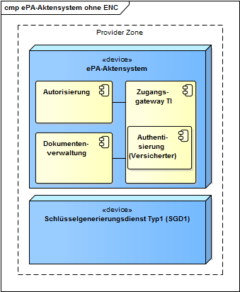

Elektronische Gesundheitskarte und Telematikinfrastruktur
Spezifikation ePA-Aktensystem
Version | 1. |
Revision |
|
Stand |
|
Status | freigegeben |
Klassifizierung | öffentlich |
Referenzierung | gemSpec_Aktensystem |
Dokumentinformationen
Änderungen zur Vorversion
Anpassungen des vorliegenden Dokumentes im Vergleich zur Vorversion können Sie der nachfolgenden Tabelle entnehmen.
Dokumentenhistorie
Version | Stand | Kap./ Seite | Grund der Änderung, besondere Hinweise | Bearbeitung |
1.0.0 | 18.12.18 |
| freigegeben | gematik |
1.1.0 | 15.05.19 |
| Einarbeitung Änderungsliste P18.1 | gematik |
1.2.0 | 28.06.19 |
| Einarbeitung Änderungsliste P19.1 | gematik |
1.3.0 | 02.10.19 |
| Einarbeitung Änderungsliste P20.1 | gematik |
1.4.0 | 02.03.20 |
| Einarbeitung Änderungsliste P21.1 | gematik |
1.4.1 | 26.05.20 |
| Einarbeitung Änderungsliste P21.3 | gematik |
1.5.0 | 30.06.20 |
| Anpassungen gemäß Änderungsliste P22.1 und Scope-Themen aus Systemdesign R4.0.0 | gematik |
1.6.0 | 12.11.20 |
| Einarbeitung Änderungsliste P22.2 und Scope-Themen Systemdesign R4.0.1 | gematik |
1.7.0 | 19.02.21 |
| Einarbeitung Änderungsliste P22.5 | gematik |
1.8.0 | 02.06.21 |
| Einarbeitung Änderungsliste ePA_Maintenance_21.1 | gematik |
1.8.1 | 09.07.21 |
| Einarbeitung Anpassung IOP-WS (ePA_Maintenance_21.2) | gematik |
1.8.2 | 02.09.21 | 5.8 | Einarbeitung Konn_Maintenance_21.5 | gematik |
1.9.0 | 31.01.22 | 5.1, 5.2 | Einarbeitung Änderungsliste ePA_Maintenance_21.4 und ePA_Maintenance_21.5 | gematik |
1.9.1 | 31.03.22 |
| Einarbeitung Änderungsliste ePA_Maintenance_22.1 | gematik |
1. |
|
|
| gematik |
1. |
|
|
| gematik |
1.51.0 | 25.07.22 |
| Änderungsliste ePA_Maintenance_22.2 | gematik |
1.52.0 | 01.12.22 | 5.6 | Einarbeitung Änderungsliste ePA_Maintenance_22.3 | gematik |
Inhaltsverzeichnis
DokumentinformationenDokumentinformationen
InhaltsverzeichnisInhaltsverzeichnis
: : 1.1 Zielsetzung
: : 1.2 Zielgruppe
: : 1.4 Abgrenzungen
: : 1.5 Methodik
: : 1.6 Erläuterungen zur Spezifikation des Außenverhaltens
: : 3.2 ePA-Aktensysteme unterschiedlicher Anbieter
: 5 Übergreifende Festlegungen
: : 5.1 Akten- und Service-Lokalisierung
: : : 5.2.1 Übergreifende Anforderungen zur Protokollierung
: : : : 5.2.1.1 Protokollfilter
: : : 5.2.2 Internes Fehlerprotokoll
: : 5.4 Redundanz
: : 5.5 Sichere Produktentwicklung
: : 5.6 Datenschutz und Sicherheit
: : 5.7 Validierungsaktenkonto
: : 5.8 Tracing in Nichtproduktivumgebungen
: : : 6.1.1 Kontoverwaltung und Zustandswechsel
: : : 6.1.2 Prozess der Aktenkontoeröffnung
: : : 6.1.3 Prozess der Änderung und Kündigung eines Aktenkontos
: : : 6.1.4 Prozess des Anbieterwechsels
: : 9.1 Abkürzungen
: : 9.2 Glossar
: : 9.5 Referenzierte Dokumente
: : : 9.5.1 Dokumente der gematik
: : : 9.5.2 Weitere Dokumente
1 Einordnung des Dokumentes
1.1 Zielsetzung
Die vorliegende Spezifikation definiert die übergreifenden Anforderungen zu Herstellung, Test und Betrieb des Produkttyps ePA-Aktensystem. Hierbei handelt es sich insbesondere um übergreifende technische Anforderungen, die von allen Komponenten gleichermaßen umzusetzen sind, um organisatorische Anforderungen gegen den Anbieter des ePA-Aktensystems, die für die Realisierung der Anwendungsfälle zur Aktenkontoverwaltung benötigt werden, und um übergreifende Sicherheitsanforderungen. Die Systemzerlegung der Fachanwendung ePA in Komponenten und Produkttypen sowie die Verteilung der Komponenten auf Produkttypen der Telematikinfrastruktur (TI) sind in [gemSysL_ePA#2.1] und in [gemSysL_ePA#4.1] definiert.
Für die einzelnen Komponenten des Produkttyps ePA-Aktensystem existieren eigene Spezifikationsdokumente, in denen die spezifischen Anforderungen der jeweiligen Komponente beschrieben werden.
1.2 Zielgruppe
Das Dokument ist maßgeblich für Anbieter und Hersteller des Produkttyps ePA-Aktensystem sowie für Anbieter und Hersteller von Produkten, die die Schnittstellen des Produkttyps ePA-Aktensystem nutzen.
1.3 Geltungsbereich
Dieses Dokument enthält normative Festlegungen zur Telematikinfrastruktur des deutschen Gesundheitswesens. Der Gültigkeitszeitraum der vorliegenden Version und deren Anwendung in Zulassungs- oder Abnahmeverfahren wird durch die gematik mbH in gesonderten Dokumenten (z.B. Dokumentenlandkarte, Produkttypsteckbrief, Leistungsbeschreibung) festgelegt und bekannt gegeben.
Schutzrechts-/Patentrechtshinweis
Die nachfolgende Spezifikation ist von der gematik allein unter technischen Gesichtspunkten erstellt worden. Im Einzelfall kann nicht ausgeschlossen werden, dass die Implementierung der Spezifikation in technische Schutzrechte Dritter eingreift. Es ist allein Sache des Anbieters oder Herstellers, durch geeignete Maßnahmen dafür Sorge zu tragen, dass von ihm aufgrund der Spezifikation angebotene Produkte und/oder Leistungen nicht gegen Schutzrechte Dritter verstoßen und sich ggf. die erforderlichen Erlaubnisse/Lizenzen von den betroffenen Schutzrechtsinhabern einzuholen. Die gematik GmbH übernimmt insofern keinerlei Gewährleistungen.
1.4 Abgrenzungen
Spezifiziert werden in dem Dokument die übergreifenden Anforderungen an den Produkttyp ePA-Aktensystem. Die bereitgestellten (angebotenen) Schnittstellen werden in den Spezifikationen der einzelnen Komponenten des ePA-Aktensystems definiert. Benutzte Schnittstellen werden hingegen in der Spezifikation desjenigen Produkttypen beschrieben, der diese Schnittstelle bereitstellt. Auf die entsprechenden Dokumente wird referenziert (siehe auch Anhang A5).
Die vollständige Anforderungslage für den Produkttyp ergibt sich aus weiteren Konzept- und Spezifikationsdokumenten, diese sind in dem Produkttypsteckbrief des Produkttyps ePA-Aktensystem verzeichnet.
1.5 Methodik
Anforderungen als Ausdruck normativer Festlegungen werden durch eine eindeutige ID in eckigen Klammern sowie die dem RFC 2119 [RFC2119] entsprechenden, in Großbuchstaben geschriebenen deutschen Schlüsselworte MUSS, DARF NICHT, SOLL, SOLL NICHT, KANN gekennzeichnet.
Sie werden im Dokument wie folgt dargestellt:
<AFO-ID> - <Titel der Afo>
Text / Beschreibung
[<=]
Dabei umfasst die Anforderung sämtliche zwischen Afo-ID und Textmarke [<=] angeführten Inhalte.
1.6 Erläuterungen zur Spezifikation des Außenverhaltens
Das „ePA-Aktensystem“ stellt einen komplexen Produkttyp dar. An dieser Stelle folgen daher wesentliche Informationen, die das korrekte Verstehen der Spezifikation fördern:
- Die Spezifikation des ePA-Aktensystems ist eine Black-Box-Spezifikation, das heißt, alle Festlegungen dienen ausschließlich der Beschreibung des von der Komponente verlangten Verhaltens an der Außenschnittstelle des Produkttyps ePA-Aktensystem.
- Normative Festlegungen, die eine Festlegung des inneren Verhaltens vermuten lassen, sind nur in so weit normativ, wie ihre Festlegungen auf die Außenschnittstelle wirken. Sie legen explizit nicht die intern zu verwendende Implementierung fest. Die Notwendigkeit für diese Art der "scheinbaren internen Beschreibung" ergibt sich aus der Komplexität der Gesamtkomponente, sowie dem Bedarf, wiederholt ähnliche Verhaltensweisen in Außenschnittstellen darstellen zu müssen. Die konkrete akteninterne Modularisierung bleibt dem Hersteller freigestellt. Insbesondere bleibt es dem Hersteller freigestellt, intern bereits Mechanismen für kommende Releases zu realisieren, sofern diese an der Außenschnittstelle keine Auswirkung zeigen.
- Die einzige Abweichung von dieser Vorgehensweise ergibt sich für Sicherheitsaspekte. Hier können interne Vorgänge normativ gefordert sein, die sich an der Außenschnittstelle nicht manifestieren (Beispiel "Verpflichtung auf sicheres Löschen eines temporären Schlüssels nach Gebrauch"). In diesem Fall erfolgt die Überprüfung der Einhaltung dieser Anforderungen im Rahmen des Nachweises der sicherheitstechnischen Eignung.
2 Systemüberblick
Das ePA-Aktensystem besteht aus den Komponenten
- Zugangsgateway TI,
- Authentisierung (Versicherter),
- Autorisierung,
- Dokumentenverwaltung
deren Funktionsweise in separaten Spezifikationen beschrieben sind. Zusätzlich zu diesen Komponenten muss der Anbieter des ePA-Aktensystems einen Schlüsselgenerierungsdienst Typ1 (SGD1) in der Provider Zone zur Verfügung stellen. Dieses Dokument bildet die Klammer über diese logischen Komponenten und spezifiziert insbesondere das Verhältnis des Anbieters und Betreibers zum ePA-Aktensystem sowie organisatorische Prozesse und Schnittstellen gegenüber dem Versicherten als "Kunden" des Anbieters des ePA-Aktensystems.

Abbildung 1: Komponenten des ePA-Aktensystems
3 Systemkontext
3.1 Nachbarsysteme
Das ePA-Aktensystem eines Anbieters kommuniziert in Richtung des Versicherten jeweils mit einem oder mehreren ePA- Frontends des Versicherten. Die ePA-FdVs können dabei auch von unterschiedlichen Herstellern angeboten werden. In Richtung der Leistungserbringerinstitution kommuniziert das ePA-Aktensystem ausschließlich mit dem Fachmodul ePA im Konnektor. Das Fachmodul ePA im Konnektor übernimmt die Kommunikation mit den Primärsystemen. Das ePA-Aktensystem nutzt außerdem zentrale Dienste der TI-Plattform.


Abbildung 2: Nachbarsysteme des ePA-Aktensystems
3.2 ePA-Aktensysteme unterschiedlicher Anbieter
Sowohl bei der Registrierung eines Aktenkontos als auch bei einem Anbieterwechsel gibt es Kommunikationsbeziehungen zwischen den Systemen der Anbieter von ePA-Aktensystemen. Im Rahmen der Registrierung zur Eröffnung eines Aktenkontos erfolgt eine Abfrage zwischen den Anbietern, ob für den jeweiligen Versicherten ggf. bereits ein Aktenkonto existiert. Ist dies der Fall, kann eine Registrierung nur abgeschlossen werden, wenn für ein bereits bestehendes Aktenkonto der Status unknown, dismissed oder suspended zurückgemeldet wird.
Hat der Versicherte für den Anbieterwechsel die Migration seiner Daten vom Alt-Anbieter zu seinem neuen Anbieter vorgesehen, erfolgt die Übermittlung eines verschlüsselten Migrationspakets direkt zwischen den Systemen der Anbieter.
4 Zerlegung des Produkttyps
Der Produkttyp ePA-Aktensystem wird gemäß der funktionalen Zerlegung in [gemSysL_ePA#4.1] in die dort definierten Komponenten aufgeteilt.
5 Übergreifende Festlegungen
A_17865 - Anbieter ePA-Aktensystem - Rollenausschluss für Anbieter eines ePA-Aktensystems
Der Anbieter des ePA-Aktensystems MUSS unabhängig von Anbietern von Signaturdiensten und vom Anbieter des Schlüsselgenerierungsdienstes SGD2 der zentralen TI-Plattform sein, d.h. es sind mindestens jeweils eigenständige Rechtspersönlichkeiten mit eigenständigen operativen Geschäfts- und Betriebsführungen und es ist eine strikte Vermeidung von Personenidentitäten bzw. Doppelrollen in den Funktionen Geschäftsführung, leitende Mitarbeiter und Zugangsberechtigte zum Betriebsort des Signaturdienstes, Schlüsselgenerierungsdienstes SGD2 bzw. ePA-Aktensystems gewährleistet.
[<=]
Hinweis: Die Anforderung schließt nicht aus, dass die Anbieter verbundene Unternehmen im Sinne des § 15 AktG sind.
A_21248-01 - Anbieter ePA-Aktensystem - Unabhängigkeit des Betreibers eines ePA-Aktensystems vom Betreiber eines KTR-Consumers
Der Anbieter des ePA-Aktensystems und der Anbieter des KTR-Consumers MÜSSEN dafür Sorge tragen, dass ihr beauftragter Betreiber für das ePA-Aktensystem unabhängig vom beauftragten Betreiber des KTR-Consumers ist, d.h. es sind mindestens jeweils eigenständige Rechtspersönlichkeiten mit eigenständigen operativen Geschäfts- und Betriebsführungen und es ist eine strikte Vermeidung von Personenidentitäten bzw. Doppelrollen in den Funktionen Geschäftsführung, leitende Mitarbeiter und Zugangsberechtigte zum Betriebsort des KTR-Consumers bzw. des ePA-Aktensystems gewährleistet. [<=]
A_18765 - Gemeinsame Kontaktstelle von Signaturdienst und ePA-Aktensystem
Falls ein Anbieter eines ePA-Aktensystems und ein Anbieter eines Signaturdienstes den Versicherten eine gemeinsame Kontaktstelle (z.B. User-Help-Desk) sowohl für Anfragen zum ePA-Aktensystem als auch zum Signaturdienst anbieten, MÜSSEN sowohl der Anbieter des ePA-Aktensystems als auch der Anbieter des Signaturdienstes sicherstellen, dass
- die Kontaktstelle die Erstellung oder Änderungen von Authentifizierungsmerkmalen beim Signaturdienst und die Erstellung oder Änderungen der Mailadresse für die Geräteverwaltung im ePA-Aktensystem nur im 4-Augen-Prinzip beauftragt,
- die Kontaktstelle die Erstellung oder Änderungen von Authentifizierungsmerkmalen beim Signaturdienst und die Erstellung oder Änderungen der Mailadresse für die Geräteverwaltung im ePA-Aktensystem nur auf Verlangen des Versicherten beauftragt und
- nachträglich von Dritten nachvollzogen werden kann, dass eine Erstellung oder eine Änderung durch den Versicherten beauftragt wurde und welche Mitarbeiter der Kontaktstelle die Erstellung oder Änderungen bzw. Aufträge zur Erstellung oder Änderung ausgelöst haben.
[<=]
A_19124 - Mitarbeiter der Kontaktstelle haben keinen Zugriff auf das ePA-Aktensystem und Signaturdienst
Falls ein Anbieter eines ePA-Aktensystems und ein Anbieter eines Signaturdienstes den Versicherten eine gemeinsame Kontaktstelle (z.B. User-Help-Desk) sowohl für Anfragen zum ePA-Aktensystem als auch zum Signaturdienst anbieten, MÜSSEN sowohl der Anbieter des ePA-Aktensystems als auch der Anbieter des Signaturdienstes sicherstellen, dass die Mitarbeiter der Kontaktstelle die Anfragen der Versicherten lediglich an das ePA-Aktensystem bzw. den Signaturdienst weiterleiten können und technisch verhindert wird, dass die Mitarbeiter der Kontaktstelle Änderungen an den Systemen des ePA-Aktensystems bzw. des Signaturdienstes selbstständig durchführen können.
[<=]
A_19123 - Dokumentationspflicht zur gemeinsamen Kontaktstelle
Falls ein Anbieter eines ePA-Aktensystems und ein Anbieter eines Signaturdienstes den Versicherten eine gemeinsame Kontaktstelle (z.B. User-Help-Desk) sowohl für Anfragen zum ePA-Aktensystem als auch zum Signaturdienst anbieten, MÜSSEN sowohl der Anbieter des ePA-Aktensystems als auch der Anbieter des Signaturdienstes folgendes dokumentieren, :
- Art und Umfang der Aufgaben der Kontaktstelle sowie der dafür
erforderlichenerforderliche Systemzugriff Diedie betrieblichen Prozesse der Kontaktstelle und deren AbsicherungWiewie die Systemschnittstellen zwischen der Kontaktstelle und Aktensystem sowie Signaturdienstabsichertabgesichert sindEineeine umfassende Risikoanalyse mit Fokus auf Angriffe von Innentätern sowie Sozial-Engineering-Angriffe von Kunden.
[<=]
5.1 Akten- und Service-Lokalisierung
A_15246 - Anbieter ePA-Aktensystem - OID als homeCommunityID für Aktenanbieter
Der Anbieter des ePA-Aktensystems MUSS als homeCommunityID [gemSpec_DM_ePA#2.1.4.6] eine OID verwenden, die er beim DIMDI beantragt.
[<=]
A_14127-04 - Anbieter ePA-Aktensystem - PTR für Anbieterliste (RFC Service-Discovery)
Der Anbieter des ePA-Aktensystems MUSS DNS A, PTR und SRV Resource Records für sein Aktensystem im Namensraum der TI gemäß folgender Tabelle verwalten.
Tabelle 1: Tab_ePA_Service Discovery
Resource Record Bezeichner | Resource Record Type | Beschreibung |
FQDN des authn Service | A | A Resource Records zur Namensauflösung von FQDN des authn Services ePA-Aktensystems des jeweiligen Anbieters in IP-Adressen |
FQDN des authz Service | A | A Resource Records zur Namensauflösung von FQDN des authz Services ePA-Aktensystems des jeweiligen Anbieters in IP-Adressen |
FQDN des docv Service | A | A Resource Records zur Namensauflösung von FQDN des docv Services ePA-Aktensystems des jeweiligen Anbieters in IP-Adressen |
FQDN des sgd1 Service | A | A Resource Records zur Namensauflösung von FQDN des sgd1 Services ePA-Aktensystems des jeweiligen Anbieters in IP-Adressen |
_authn._tcp.epa.telematik | PTR | Ermittlung aller ePA-Authentisierungs-Dienste “<hcid> authn Service“ |
_authz._tcp.epa.telematik | PTR | Ermittlung aller ePA-Autorisierungs-Dienste “<hcid> authz Service“ |
_docv._tcp.epa.telematik | PTR | Ermittlung aller ePA-Dokumentenverwaltungs-Dienste “<hcid> docv Service“ |
_sgd1._tcp.epa.telematik | PTR | Ermittlung des zum ePA-Aktensystem gehörigen Schlüsselgenerierungsdienstes (Typ 1) "<hcid> sgd1 Service" |
_gwvers._tcp.epa.telematik | PTR | Ermittlung aller Internet-FQDN aller ePA-Aktensysteme |
_amcre._tcp.epa.telematik | PTR | Ermittlung aller ePA-Autorisierungs-Dienste für mandantenübergreifende Anfragen „<hcid> authz Service“ |
“<hcid> authn Service“ | SRV und TXT | SRV Resource Record zur Ermittlung des FQDN des authn-Dienstes; |
“<hcid> authz Service“ | SRV und TXT | SRV Resource Record zur Ermittlung des FQDN des authz-Dienstes; |
“<hcid> docv Service“ | SRV und TXT | SRV Resource Record zur Ermittlung des FQDN des docv-Dienstes; |
“<hcid> sgd1 Service“ | SRV und TXT | SRV Resource Record zur Ermittlung des FQDN des sgd_typ1-Dienstes; |
“<hcid> gwvers Service“ | SRV und TXT | SRV Resource Record zur Ermittlung des FQDN des Aktensystems; |
[<=]
Hinweis zum „amcre“-Eintrag: dieser ist NICHT für jeden Aktensystem-Mandanten anzulegen, sondern nur für eine Instanz (oder mehrere Instanzen) pro Aktensystem, welche die mandantenübergreifenden CheckRecordExist-Anfragen mit dem Parameter AllMandators=true beantworten sollen.
Wenn im Bezeichner die HCID verwendet wird, sollen . durch - ersetzt werden, da . Sonderzeichen im DNS darstellen.
Beispiel: 1.2.276.0.76.3.1.91 wird zu 1-2-276-0-76-3-1-91
Beispiele zur Dienstlokalisierung
1. Für HCID: 1.2.276.0.76.3.1.91
_authn._tcp.epa.telematik. 86400 IN PTR _1-2-276-0-76-3-1-91._authn._tcp.epa.telematik.
_1-2-276-0-76-3-1-91._authn._tcp.epa.telematik. 86400 IN SRV 5 10 443 authn.hrst1.epa.telematik.
_1-2-276-0-76-3-1-91._authn._tcp.epa.telematik. 86400 IN TXT „txtvers=1“ „hcid=1.2.276.0.76.3.1.91“„path=/“
authn.hrst1.epa.telematik IN A 10.28.2.15
_authz._tcp.epa.telematik. 86400 IN PTR _1-2-276-0-76-3-1-91._authz._tcp.epa.telematik.
_1-2-276-0-76-3-1-91._authz._tcp.epa.telematik. 86400 IN SRV 5 10 443 authz.hrst1.epa.telematik.
_1-2-276-0-76-3-1-91._authz._tcp.epa.telematik. 86400 IN TXT „txtvers=1“ „hcid=1.2.276.0.76.3.1.91“ „path=/“
authz.hrst1.epa.telematik IN A 10.28.2.16
_docv._tcp.epa.telematik. 86400 IN PTR _1-2-276-0-76-3-1-91._docv._tcp.epa.telematik.
_1-2-276-0-76-3-1-91._docv._tcp.epa.telematik. 86400 IN SRV 5 10 443 docv.hrst1.epa.telematik.
_1-2-276-0-76-3-1-91._docv._tcp.epa.telematik. 86400 IN TXT „txtvers=1“ „hcid=1.2.276.0.76.3.1.91“„path=/“
docv.hrst1.epa.telematik IN A 10.28.2.17
_sgd1._tcp.epa.telematik. 86400 IN PTR _1-2-276-0-76-3-1-91._sgd1._tcp.epa.telematik.
_1-2-276-0-76-3-1-91._sgd1._tcp.epa.telematik. 86400 IN SRV 5 10 443 sgd1.hrst1.epa.telematik.
_1-2-276-0-76-3-1-91._sgd1._tcp.epa.telematik. 86400 IN TXT „txtvers=1“ „hcid=1.2.276.0.76.3.1.91“„path=/“
sgd1.hrst1.epa.telematik IN A 10.28.2.14
_gwvers._tcp.epa.telematik. 86400 IN PTR _1-2-276-0-76-3-1-91._gwvers._tcp.epa.telematik.
_1-2-276-0-76-3-1-91._gwvers._tcp.epa.telematik. 86400 IN SRV 5 10 443 epa.anbieter1.de.
_1-2-276-0-76-3-1-91._gwvers._tcp.epa.telematik. 86400 IN TXT „txtvers=1“ „hcid=1.2.276.0.76.3.1.91“ „name=AnbierKK1“
2. Für HCID: 1.2.276.0.76.3.1.99
authn._tcp.epa.telematik. 86400 IN PTR _1-2-276-0-76-3-1-99._authn._tcp.epa.telematik.
_1-2-276-0-76-3-1-99._authn._tcp.epa.telematik. 86400 IN SRV 5 10 443 authn.hrst2.epa.telematik.
_1-2-276-0-76-3-1-99._authn._tcp.epa.telematik. 86400 IN TXT „txtvers=1“ „hcid=1.2.276.0.76.3.1.99“ „path=/“
authn.hrst2.epa.telematik. IN A 10.28.2.25
_authz._tcp.epa.telematik. 86400 IN PTR _1-2-276-0-76-3-1-99._authz._tcp.epa.telematik.
_1-2-276-0-76-3-1-99._authz._tcp.epa.telematik. 86400 IN SRV 5 10 443 authz.hrst2.epa.telematik.
_1-2-276-0-76-3-1-99._authz._tcp.epa.telematik. 86400 IN TXT „txtvers=1“ „hcid=1.2.276.0.76.3.1.99“ „path=/“
authz.hrst2.epa.telematik. IN A 10.28.2.26
_docv._tcp.epa.telematik. 86400 IN PTR _1-2-276-0-76-3-1-99._docv._tcp.epa.telematik.
_1-2-276-0-76-3-1-99._docv._tcp.epa.telematik. 86400 IN SRV 5 10 443 docv.hrst2.epa.telematik.
_1-2-276-0-76-3-1-99._docv._tcp.epa.telematik. 86400 IN TXT „txtvers=1“ „hcid=1.2.276.0.76.3.1.99“ „path=/“
docv.hrst2.epa.telematik. IN A 10.28.2.27
_sgd1._tcp.epa.telematik. 86400 IN PTR _1-2-276-0-76-3-1-99._sgd1._tcp.epa.telematik.
_1-2-276-0-76-3-1-99._sgd1._tcp.epa.telematik. 86400 IN SRV 5 10 443 sgd1.hrst2.epa.telematik.
_1-2-276-0-76-3-1-99._sgd1._tcp.epa.telematik. 86400 IN TXT „txtvers=1“ „hcid=1.2.276.0.76.3.1.99“ „path=/“
sgd1.hrst2.epa.telematik. IN A 10.28.2.24
_gwvers._tcp.epa.telematik. 86400 IN PTR _1-2-276-0-76-3-1-99._gwvers._tcp.epa.telematik.
_1-2-276-0-76-3-1-99._gwvers._tcp.epa.telematik. 86400 IN SRV 5 10 443 epa.anbieter2.de.
_1-2-276-0-76-3-1-99._gwvers._tcp.epa.telematik. 86400 IN TXT „txtvers=1“ „hcid=1.2.276.0.76.3.1.99“ „name=AnbierKK2“
A_14128-0203 - Anbieter ePA-Aktensystem - Resource Records FQDN ePA
Der Anbieter des ePA-Aktensystems MUSS in den Nameservern Internet die Resource Records gemäß nachstehender Tabelle verwalten.
Resource Record Type | Beschreibung |
A | A Resource Records zur Namensauflösung von FQDN des ePA-Aktensystems des jeweiligen Anbieters in IP-Adressen |
TXT | TXT Resource Records zur Ermittlung der Aufruf-Schnittstellen der jeweiligen Module des ePA-Aktensystems. Alle für die Adressierung dieser Module benötigten Resource Records MÜSSEN bereitgestellt werden und deren Zugehörigkeit zum Aktensystem des Anbieters durch Clients (ePA-Frontend des Versicherten
Die key/value-Paare der TXT-Records haben folgende Struktur (die spitzen Klammern dienen der Abgrenzung eines Wertes): |
Beispiel zur Dienstlokalisierung im Internet-DNS:
*.epa1.de. IN A <IP-Adresse>
*.epa1.de. TTL IN TXT "txtvers=1" "hcid=1.2.276.0.76.3.1.99" "authn=/authn/" "authz=/authz/" "avzd=/avzd/" "docv=/docv/" "ocspf=/ocspf/" "sgd1=/SGD1/" "sgd2=/SGD2/"
ggf. weitere Records für SRV, NS
A_22688 - Anbieter ePA-Aktensystem, Konfiguration Schnittstellen über /.well-known/
Der Anbieter des ePA-Aktensystems MUSS an seinen Zugangsgateway des Versicherten die Schnittstellenkonfiguration aus A_14128-* über den URL-Pfadnamen (bwz. die Datei) /.well-known/epa-configuration.json eine JSON-Repräsentation aller dieser Attribute (vgl. A_14128-*) verfügbar machen.
D. h. der Aufrufende (ePA-FdV) MUSS wenn er diesen Pfad per HTTP-GET abfragt ein JSON-Objekt (also Content-Type "application/json") vom Zugangsgateway des Versicherten erhalten der Art
{
"ocspf" : "...Wert1...",
"hcid" : "...Wert2...",
"authn" : "...Wert3...",
"authz" : "...Wert4...",
....
} [<=]
A_22687 - Aktensystem, Konfiguration Schnittstellen über /.well-known/
Das ePA-Aktensystem MUSS sicherstellen, dass dem Anbieter des ePA-Aktensystems die technische Möglichkeit bereitgestellt wird A_22688-* umzusetzen. [<=]
A_17969-04 - Anbieter ePA-Aktensystem - Schnittstellenadressierung
Der Anbieter des ePA-Aktensystems MUSS alle nach außen angebotenen Dienste der Komponenten Autorisierung, Zugangsgateway (Authentisierung) sowie ePA-Dokumentenverwaltung unter den folgenden URLs zur Verfügung stellen und eingehende SOAP- und REST-Nachrichten entsprechend verarbeiten:
https://<FQDN aus DNS Lookup>:443/<Komponente aus DNS Lookup>/<Fester Wert der Schnittstelle gemäß [gemSysL_ePA#4.2]>
Daraus ergeben sich folgende Konstellationen für den Aufbau von komponentenspezifischen URLs (in spitzen Klammern dargestellte Werte sind dynamisch)für den Aufruf des Aktensystem vom
- ePA-Fachmodul:
- https://<FQDN des authn-Dienstes aus DNS Lookup>:443/<authn-Komponente aus DNS Lookup>/I_Authentication_Insurant
- https://<FQDN des authz-Dienstes aus DNS Lookup>:443/<authz-Komponente aus DNS Lookup>/I_Authorization
- https://<FQDN des authz-Dienstes aus DNS Lookup>:443/<authz-Komponente aus DNS Lookup>/I_Authorization_Management
- https://<FQDN des docv-Dienstes aus DNS Lookup>:443/<docv-Komponente aus DNS Lookup>/I_Document_Management
- https://<FQDN des docv-Dienstes aus DNS Lookup>:443/<docv-Komponente aus DNS Lookup>/I_Document_Management_Connect
- ePA-Fachmodul KTR-Consumer:
- https://<FQDN des authz-Dienstes aus DNS Lookup>:443/<authz-Komponente aus DNS Lookup>/I_Authorization
- https://<FQDN des docv-Dienstes aus DNS Lookup>:443/<docv-Komponente aus DNS Lookup>/I_Document_Management_Insurance
- https://<FQDN des docv-Dienstes aus DNS Lookup>:443/<docv-Komponente aus DNS Lookup>/I_Document_Management_Connect
- ePA-Frontend des Versicherten:
- https://<FQDN des ePA-Aktensystems>:443/<authn-Komponente aus DNS Lookup>/I_Authentication_Insurant
- https://<FQDN des ePA-Aktensystems>:443/<avzd-Komponente aus DNS Lookup>/I_Proxy_Directory_Query
- https://<FQDN des ePA-Aktensystems>:443/<authz-Komponente aus DNS Lookup>/I_Authorization_Insurant
- https://<FQDN des ePA-Aktensystems>:443/<authz-Komponente aus DNS Lookup>/I_Authorization_Management_Insurant
- https://<FQDN des ePA-Aktensystems>:443/<docv-Komponente aus DNS Lookup>/I_Document_Management_Insurant
- https://<FQDN des ePA-Aktensystems>:443/<docv-Komponente aus DNS Lookup>/I_Account_Management_Insurant
- https://<FQDN des ePA-Aktensystems>:443/<docv-Komponente aus DNS Lookup>/I_Document_Management_Connect
- https://<FQDN des ePA-Aktensystems>:443/<docv-Komponente aus DNS Lookup>/I_Key_Management_Insurant
- https://<FQDN des ePA-Aktensystems>:443/<authz-Komponente aus DNS Lookup>/I_Authorization_Management_Insurant
- https://<FQDN des ePA-Aktensystems>:443/<authz-Komponente aus DNS Lookup>/devices
[<=]
5.2 Protokollierung
Aufgrund der informationstechnischen Trennung der Komponenten des ePA-Aktensystems protokolliert jede Komponente für sich. Hierbei protokollieren das Zugangsgateway des Versicherten (Authentisierung_Vers) und die Komponente Autorisierung jeweils in ein eigenes Verwaltungsprotokoll und die Komponente Dokumentenverwaltung in das § 291a-konforme Protokoll und in ein Verwaltungsprotokoll für den Versicherten bzw. seine Vertreter. Die Komponenten des ePA-Aktensystems protokollieren gemäß der Festlegungen in [gemSpec_DM_ePA#A_14471-04] und stellen dem ePA-Frontend des Versicherten jeweils eine Schnittstelle für den Abruf der Protokolleinträge zur Verfügung.
5.2.1 Übergreifende Anforderungen zur Protokollierung
A_14513-01 - Anbieter ePA-Aktensystem - Schutz der Protokolldaten
Der Anbieter des ePA-Aktensystems MUSS sicherstellen, dass die Verwaltungsprotokolldaten und die Daten der Zugriffsprotokolle nach § 291a SGB V der Versicherten gegen unberechtigte Veränderung und unberechtigtes Löschen geschützt sind. [<=]
A_14512 - Anbieter ePA-Aktensystem - Anbieterkennung im Protokolleintrag für Verwaltungsprotokoll
Der Anbieter des ePA-Aktensystems MUSS Einträge des Verwaltungsprotokolls um seine HomeCommunityID sowie um seinen Namen, mit dem er gegenüber den Versicherten auftritt, gemäß den Festlegungen in A_14471-* ergänzen. [<=]
A_15141 - Anbieter ePA-Aktensystem - Verwaltungsprotokolle zur Problemlösung mit Zustimmung des Versicherten
Der Anbieter des ePA-Aktensystems MUSS sicherstellen, dass ein Zugriff auf Verwaltungsprotokolle des Versicherten in den Komponenten des ePA-Aktensystems durch den Anbieter ausgeschlossen ist, außer für den Fall, dass die Zugriffe zur Lösung eines durch den Versicherten gemeldeten Problems erforderlich sind und der Versicherte dem Zugriff explizit zugestimmt hat. [<=]
A_19051 - Löschen von Protokolldaten
Der Anbieter des ePA-Aktensystems MUSS sicherstellen, dass das ePA-Aktensystem die zum Zwecke der Datenschutzkontrolle für den Versicherten erstellten Verwaltungsprotokolldaten und Protokolldaten von Zugriffen und Zugriffsversuchen auf Daten der elektronischen Patientenakte des Versicherten in der Komponente Dokumentenverwaltung nicht früher als nach drei Jahren löscht. Nach dieser Frist MUSS unverzüglich eine automatisierte Löschung durch das ePA-Aktensystem erfolgen. [<=]
A_21108 - Anbieter ePA-Aktensystem – Aufbewahren der Verwaltungsprotokolle bei Schließen der Akte
Falls das Aktenkonto eines Versicherten geschlossen wird, MUSS der Anbieter des ePA-Aktensystems sicherstellen, dass die Verwaltungsprotokolle des Versicherten bis Ablauf der gesetzlich geforderten Aufbewahrungsfrist von drei Jahren für den ausschließlichen Zweck der Auskunft des Versicherten oder aufsichtsrechtlicher Kontrollen noch zur Verfügung stehen und den Versicherten hierüber informieren.
[<=]
A_21109 - Anbieter ePA-Aktensystem – Hinweis zur selbstständigen Sicherung der Protokolle bei Schließen der Akte
Falls das Aktenkonto eines Versicherten geschlossen wird, MUSS der Anbieter des ePA-Aktensystems den Versicherten darauf hinweisen, seine Protokolldaten aus der Akte für eine weitere Verwendung selbstständig zu exportieren, da diese nach Schließen der Akte im Aktensystem nur eingeschränkt und nicht mehr vollständig für datenschutzrechtliche Auskünfte zur Verfügung stehen.
[<=]
Hinweis: Die obige Anforderung umfasst insbesondere auch das Schließen ohne ePA-FdV, z. B. schriftliche Kündigung. Für das Schließen des Kontos mittels ePA-FdV gibt es im ePA-FdV einen entsprechenden Hinweis. Nach Schließen der Akte stehen dem Versicherten nur noch die Verwaltungsprotokolle, aber nicht mehr die Protokolle aus der Dokumentenverwaltung zur Verfügung.
A_21204 - ePA-Aktensystem - PAdES-Signatur in getSignedAuditEvents
Die Komponenten des ePA-Aktensystems MÜSSEN beim Signieren eineines Protokolls im PDF/A-Format eine PAdES-Signatur gemäß [PAdES-3] und [PAdES Baseline Profile] erstellen. Bei der Signaturerstellung ist das Attribut signing certificate reference gemäß den Vorgaben aus [PAdES-3] Kapitel 4.4.3 „Signing Certificate Reference Attribute“ anzulegen. [<=]
Durch die Baseline-Profilierung [PAdES Baseline Profile] wird festgelegt, wie der Signaturzeitpunkt, gemessen als Systemzeit des Aktensystems, in die Signatur eingebracht wird.
5.2.1.1 Protokollfilter
Da sich in den Komponenten Dokumentenverwaltung, Authentisierung Versicherter und Autorisierung über die Zeit viele Protokolleinträge in den Protokollen (Verwaltungsprotokoll, Protokoll gemäß § 291a) sammeln, kann es sinnvoll sein, nur Teile davon abzurufen, um sowohl Server als auch Client nicht unnötig zu belasten.
Die folgenden Anforderungen beschreiben, wie die Menge der Protolleinträge beim Protokollabruf eingeschränkt werden können.
Wenn ein Client keinerlei Filtervorgaben macht, erhält er immer alle Protokolleinträge zurück.
A_21303-0304 - ePA-Aktensystem - Suchparameter beim Abruf von Protokollen
Beim Abrufen von Protokollen über die Schnittstellen I_Authentication_Insurant::getAuditEvents,I_Authentication_Insurant::getSignedAuditEvents, I_Authorization_Management_Insurant::getAuditEvents,I_Authorization_Management_Insurant::getSignedAuditEvents, I_Account_Management_Insurant::GetAuditEvents und I_Account_Management_Insurant::GetSignedAuditEvents MÜSSEN die Komponenten Authentisierung, Autorisierung und ePA-Dokumentenverwaltung die folgenden Ein- und Ausgabeparameter (Suchparameter) unterstützen:
Parameter | Semantik | Opt. | Format | Request | Response |
PageSize | Legt die Zahl der Einträge je Seite fest. Muss immer zusammen mit Parameter PageNumber verwendet werden. | R | Integer (> 0) | X | X |
PageNumber | Legt die Seite fest, die von der aufgerufenen Komponente ausgeliefert werden soll. Muss immer zusammen mit Parameter PageSize verwendet werden. | R | Integer (> 0) | X | X |
LastDay | Legt den letzten Tag (inclusive)/Zeitpunkt fest, für den Audit logs ausgeliefert werden sollen | O | YYYY-MM-DD oder | X |
|
TotalPages | Gibt die Anzahl der vorhandenen Seiten an. Darf nur bei Verwendung des Client-Parameters PageSize/PageNumber zurückgegeben werden. | R | Integer (>= 0) |
| X |
TotalEntries | Gibt die Anzahl der vorhandenen Audit Logs an. Darf nur bei Verwendung des Client-Parameters PageSize/PageNumber zurückge-geben werden. | R | Integer (>=0) |
| X |
[<=]
Die Verpflichtung für einzelne Parameter ("R") ist nur dann gegeben, wenn grundsätzlich gefiltert werden soll (siehe auch A_21329-*). PageSize und PageNumber müssen immer zusammen verwendet werden. Dagegen kann LastDay auch alleine oder in Kombination mit PageSize plus PageNumber verwendet werden.
Das folgende Sequenzdiagramm zeigt zwei exemplarische Zugriffe auf die Schnittstelle GetAuditEvents() in Authentisierung und Autorisierung:

Im ersten Fall erfolgt der Zugriff ohne Suchparameter im Request, wodurch die Komponente alle AuditEvents zurück liefert.
Im zweiten Fall, beim Zugriff auf die Autorisierung werden die Suchparameter gesetzt, wodurch die Autorisierung nur eine Auswahl an AuditEvents ausliefert und die beiden Parameter für die Anzahl der Seiten und die Anzahl der Einträge setzt.
A_21304-01 - ePA-Aktensystem - Rückgabe vollständiger Protokolle als Standardeinstellung
Falls das ePA-Frontend des Versicherten keine Parameter gemäß A_21303-* sendet, MÜSSEN die Komponenten Authentisierung Versicherter, Autorisierung und ePA-Dokumentenverwaltung immer das vollständige Protokoll zurück liefern. [<=]
A_21329-01 - ePA-Aktensystem - Keine Suchparameter ohne entsprechende Anfrage bei Abruf von Protokollen
Falls das ePA-Frontend des Versicherten keine Parameter gemäß A_21303-* sendet, DÜRFEN die Komponenten Authentisierung Versicherter, Autorisierung und ePA-Dokumentenverwaltung ebenfalls keine Parameter gemäß A_21303-* übertragen. [<=]
A_21310 - ePA-Aktensystem - Sortieren von Protokolleinträgen beim Abruf von Protokollen mit Suchparametern
Die Komponenten Authentisierung, Autorisierung und ePA-Dokumentenverwaltung MÜSSEN bei Verwendung der Parameter gemäß A_21303-* die resultierenden Einträge in zeitlich absteigend sortierter Reihenfolge zurückgeben, wobei der aktuellste Eintrag auf Seite 1 an Position 1 steht, also zuerst übertragen wird. [<=]
A_21306 - ePA-Aktensystem - Rückgabe unvollständiger Seiten beim Abruf von Protokollen mit Suchparametern
Werden vom Client beim Filtern gemäß A_21303-* mehr Einträge pro Seite angefragt, als vorhanden sind, MUSS die angefragte Komponente (Authentisierung, Autorisierung oder ePA-Dokumentenverwaltung) so viele Einträge zurückgegeben, wie für diese Seite vorhanden sind.
[<=]
Es führt nicht zu einem Fehler, mehr Einträge anzufordern, als tatsächlich vorhanden sind. Andere Fehler hingegen führen zum Abbruch und einem HTTP-Fehler (A_21307-*).
A_21307-01 - ePA-Aktensystem - Fehlerbehandlung beim Abruf von Protokollen mit Suchparametern
Werden vom Client ungültige Parameterwerte beim Filtern gemäß A_21303-* gesetzt (z. B. angeforderte Seite > maximal verfügbare Seitenzahl oder fehlende Parameterangaben), MUSS die angefragte Komponente (Authentisierung, Autorisierung oder ePA-Dokumentenverwaltung) einen Fehler (SYNTAX_ERROR) zurückgeben. Eine Ausnahme hiervon ist der Spezialfall, dass keine Protokolleinträge vorhanden sind. In diesem Fall wird die Anfrage nicht mit einem Fehler abgebrochen, sondern die Antwort enthält dann eine leere AuditMessage, die Werte für PageSize und PageNumber werden wie im Request angegeben, TotalPages und TotalEntries werden auf 0 gesetzt.
[<=]
Die Übermittlung dieser Fehlermeldung aus der ePA-Dokumentenverwaltung erfolgt innerhalb des aufgebauten VAU-Kanals – also verschlüsselt.
A_21308-02 - ePA-Aktensystem - Begrenzung der Treffermenge beim Protokollabruf aus technischen Gründen
Die Komponenten Authentisierung, Autorisierung und ePA-Dokumentenverwaltung DÜRFEN beim Protokollabruf gemäß A_21303-* oder auch beim Abruf des gesamten Protokolls die angeforderte Anzahl Treffer pro Seite bei sehr großen Seitenangaben (PageSize) des Clients einschränken, also weniger Treffer zurückgeben als angefordert (jedoch nicht weniger als 100), sofern dies zum Schutz vor DoS-Angriffen notwendig ist.
[<=]
5.2.2 Internes Fehlerprotokoll
Um erwartete und unbeabsichtigte Abweichungen in der Bearbeitung von Operationsaufrufen nachvollziehen zu können, benötigt ein Administrator des ePA-Aktensystems geeignete Anhaltspunkte für die Fehlersuche. Hierfür ist ein Verlaufsprotokoll eine geeignete Lösung.
A_15064 - ePA-Aktensystem - Debugprotokoll
Die Komponenten des ePA-Aktensystems KÖNNEN im Testbetrieb ein Debug-Protokoll schreiben, welches eine erweiterte Protokollierung für Testzwecke ermöglicht.
[<=]
Hinweis: Die Anforderung A_15064 beschränkt den Debug-Modus auf Testzwecke. Im Produktivbetrieb ist der Debug-Modus nicht zulässig.
A_15065 - ePA-Aktensystem - Verlaufsprotokoll
Die Komponenten des ePA-Aktensystems, mit Ausnahme der VAU der Komponente ePA-Dokumentenverwaltung, MÜSSEN ein Verlaufsprotokoll schreiben, das geeignet ist, die aufgerufenen Operationen und internen Abläufe der Komponente nachzuvollziehen. Die Komponente MUSS im Verlaufsprotokoll Einträge mit folgendem Inhalt erfassen:
[Vorgangsbezeichner, Datum und Uhrzeit des Beginns des Vorgangs, Ergebnis des Vorgangs z.B. Erfolg/Misserfolg].
[<=]
A_15066 - ePA-Aktensystem - Zugriff auf Verlaufs- und Debugprotokoll
Die Komponenten des ePA-Aktensystems MÜSSEN den Zugriff auf Protokolldateien auf autorisierte Nutzer beschränken.
[<=]
A_15067 - ePA-Aktensystem - Personenbezug im Verlaufs- und Debugprotokoll
Die Komponenten des ePA-Aktensystems DÜRFEN personenbezogene Informationen, medizinische Informationen und kryptografisches Schlüsselmaterial NICHT protokollieren. [<=]
5.3 Fehlermeldungen
A_15185 - ePA-Aktensystem - Festlegungen für Fehlermeldungen auf Basis TelematikError.xsd
Die Komponenten des ePA-Aktensystems MÜSSEN für Fehlermeldungen, die auf dem XML-Schema [TelematikError.xsd] basieren, die unten aufgeführten Elemente wie folgt belegen:
- EventID = Spalte Name aus den Fehlertabellen der Operationen in den Spezifikationen der Komponenten des ePA-Aktensystems
- CompType = „AktensystemEPA“
- Code = Spalte Code aus den Fehlertabellen der Operationen in den Spezifikationen der Komponenten des ePA-Aktensystems
- ErrorText = Spalte Fehlertext aus den Fehlertabellen der Operationen in den Spezifikationen der Komponenten des ePA-Aktensystems
- ErrorType = „Business“
- Severity = „Error“
- Detail = Spalte Detail aus den Fehlertabellen der Operationen in den Spezifikationen der Komponenten des ePA-Aktensystems
Für alle übrigen Elemente gelten die Festlegungen aus [gemSpec_OM]. [<=]
5.4 Redundanz
Die Anforderungen zur Verfügbarkeit ergeben sich aus [gemSpec_Perf]. Die Verfügbarkeit wird hergestellt durch Anzahl, Verteilung und Konfiguration der Komponenten des ePA-Aktensystems. In diesem Dokument werden zusätzliche Redundanzanforderungen spezifiziert, wenn die Anforderungen in [gemSpec_Perf] zur Verfügbarkeit nicht ausreichen.
Die Auswahl der Komponenten des ePA-Aktensystems wird durch die Konnektoren aus einer durch DNS übermittelten Liste vorgenommen. Auf die Auswahl der Komponenten des ePA-Aktensystems durch den Konnektor kann der Anbieter der Komponenten des ePA-Aktensystems durch die Konfiguration und Anpassung der DNS-Einträge Einfluss nehmen. Die Verfügbarkeit ist hergestellt, wenn jeder Konnektor die Möglichkeit hat, die Komponenten des ePA-Aktensystems zu erreichen. Von der Versichertenseite aus erfolgt der Zugriff auf die Komponenten des ePA-Aktensystems durch das ePA-Frontend des Versicherten über das Zugangsgateway.
Eine hardwaretechnische Hochverfügbarkeit der einzelnen Komponenten des ePA-Aktensystems ist über grundlegende Maßnahmen, wie redundante Netzteile hinaus nicht erforderlich. Es steht dem Anbieter jedoch frei, zur Sicherstellung der Verfügbarkeitsanforderungen technische Lösungen, wie z. B. Load-Balancer und Stateful Failover innerhalb von Clustern einzusetzen, so dass jede einzelne Komponente des ePA-Aktensystems im Ergebnis eine höhere Verfügbarkeit oder Leistungsfähigkeit besitzt.
A_14921 - Anbieter ePA-Aktensystem - lokale Redundanz im Standort des ePA-Aktensystems
Der Anbieter des ePA-Aktensystems MUSS sicherstellen, dass bei Ausfall einer oder mehrerer Komponenten des ePA-Aktensystems die verbleibenden Komponenten des ePA-Aktensystems in demselben Standort den Datenverkehr aller Clients der ausgefallenen Komponente zusätzlich übernehmen, die Konsistenz der persistenten Daten erhalten bleibt und die Verfügbarkeit der Komponenten gemäß den geforderten SLAs in [gemSpec_Perf] weiterhin gegeben ist. [<=]
A_14922 - Anbieter ePA-Aktensystem - standortübergreifende Redundanz der Komponenten des ePA-Aktensystems
Der Anbieter des ePA-Aktensystems MUSS sicherstellen, dass bei Ausfall eines Rechenzentrums ein anderes Rechenzentrum an einem gemäß [BSI-Redundanz] entfernten Standort den Datenverkehr des ausgefallenen Standortes übernehmen kann. [<=]
A_15245 - Anbieter ePA-Aktensystem - standortübergreifende Redundanz und Verfügbarkeit
Der Anbieter des ePA-Aktensystems MUSS sicherstellen, dass bei Ausfall eines Standorts (Rechenzentrum) die Konsistenz der persistenten Daten erhalten bleibt und die Verfügbarkeit der Komponenten gemäß der geforderten SLAs in [gemSpec_Perf] gegeben ist. [<=]
5.5 Sichere Produktentwicklung
Um ein sicheres Produkt zu entwickeln, muss der Anbieter die Sicherheits- und Datenschutzanforderungen während der Produktentwicklung berücksichtigen.
A_15151 - Anbieter ePA-Aktensystem - Implementierungsspezifische Sicherheitsanforderungen
Der Anbieter des ePA-Aktensystems MUSS während der Entwicklung des ePA-Aktensystems implementierungsspezifische Sicherheitsanforderungen dokumentieren und umsetzen. [<=]
A_15146 - Anbieter ePA-Aktensystem - Verwendung eines sicheren Entwicklungsprozesses
Der Anbieter des ePA-Aktensystems MUSS während der Entwicklung des ePA-Aktensystems einen sicheren Entwicklungsprozess verwenden. [<=]
Hinweis: es gibt mehrere Möglichkeiten, um einen sicheren Entwicklungsprozess (Englisch: Security Development Lifecycle) zu implementieren. Ein Beispiel von einem sicheren Entwicklungsprozess ist der Microsoft Security Development Lifecycle.
A_15147 - Anbieter ePA-Aktensystem - Sicherheitsrelevantes Softwarearchitektur-Review
Der Anbieter des ePA-Aktensystems MUSS ein sicherheitsrelevantes Software- und Sicherheitsarchitektur-Review durchführen und identifizierte Architekturschwachstellen beheben. [<=]
A_15148 - Anbieter ePA-Aktensystem - Durchführung einer Bedrohungsanalyse
Der Anbieter des ePA-Aktensystems MUSS eine Bedrohungsanalyse durchführen und Maßnahmen gegen die identifizierten Bedrohungen implementieren. [<=]
A_15149 - Anbieter ePA-Aktensystem - Durchführung regelmäßiger sicherheitsrelevanter Quellcode-Reviews
Der Anbieter des ePA-Aktensystems MUSS während der Entwicklung des ePA-Aktensystems regelmäßige sicherheitsrelevante Quellcode-Reviews oder automatisierte sicherheitsrelevante Quellcode-Scans durchführen und alle identifizierten kritischen Schwachstellen der Stufen "medium" oder "hoch" beheben. [<=]
A_15150 - Anbieter ePA-Aktensystem - Durchführung regelmäßiger Sicherheitstests
Der Anbieter des ePA-Aktensystems MUSS während der Entwicklung des ePA-Aktensystems regelmäßige automatisierte Sicherheitstests durchführen und alle identifizierten kritischen Schwachstellen der Stufen "medium" oder "hoch" beheben. [<=]
A_15152 - Anbieter ePA-Aktensystem - Sicherheitsschulung für Entwickler
Der Anbieter des ePA-Aktensystems MUSS alle Entwickler des ePA-Aktensystems in sicherer Entwicklung und Secure Coding-Techniken schulen.
[<=]
5.6 Datenschutz und Sicherheit
A_15128 - Anbieter ePA-Aktensystem - Schutz der transportierten Daten im ePA-Aktensystem
Der Anbieter des ePA-Aktensystems MUSS sicherstellen, dass die Vertraulichkeit und Integrität der innerhalb des ePA-Aktensystems transportierten Daten gewährleistet ist. [<=]
Hinweis: Hierzu gehören insbesondere die Kommunikation zwischen der Komponente Zugangsgateway und der Komponente Autorisierung, zwischen der Komponente Zugangsgateway und der Komponente Dokumentenverwaltung sowie zwischen dem Aktenkontenmanagement (inkl. Vertragsdatenmanagement) mit den Komponenten des ePA-Aktensystems.
Die folgenden Anforderungen verhindern Profilbildungen über Versicherte und Leistungserbringer(-institutionen) durch den Anbieter bzw. dessen Mitarbeiter.
A_15103 - Anbieter ePA-Aktensystem - Konzept zur Verhinderung von Profilbildung
Der Anbieter des ePA-Aktensystems MUSS ein Konzept erstellen und umsetzen, dass sicherstellt, dass Mitarbeiter des Anbieters die im ePA-Aktensystem verarbeiteten Daten nicht für Profilbildungen über Versicherte oder Leistungserbringer(-institutionen) nutzen können. [<=]
Hinweis: Das Konzept kann Teil des Sicherheits- oder Datenschutzkonzeptes des Anbieters sein. Es ist nicht notwendigerweise ein eigenes Dokument erforderlich.
A_15104 - Anbieter ePA-Aktensystem - Ordnungsgemäße IT-Administration
Der Anbieter des ePA-Aktensystems MUSS die Maßnahmen für erhöhten Schutzbedarf des BSI-Bausteins „OPS.1.1.2 Ordnungsgemäße IT-Administration“ [BSI-Grundschutz] während des gesamten Betriebs des ePA-Aktensystems umsetzen. [<=]
Hinweis: Die Anforderungen des BSI-Bausteins sind entsprechend des dort genannten Schlüsselwortes („MUSS, DARF NICHT/ DARF KEIN, SOLLTE; SOLLTE NICHT/SOLLTE KEIN, KANN/DARF“) umzusetzen.
A_15824 - Anbieter ePA-Aktensystem - Sichere Speicherung von Daten
Unabhängig davon, ob die Daten schon verschlüsselt vorliegen, MUSS der Anbieter des ePA-Aktensystems die Daten des ePA-Aktensystems bei der Speicherung verschlüsseln. [<=]
Hinweis: Dies kann z.B. durch eine transparente Datenbankverschlüsselung oder eine Festplattenverschlüsselung erfolgen.
A_15105 - Anbieter ePA-Aktensystem - Zwei-Faktor-Authentisierung von Administratoren
Der Anbieter des ePA-Aktensystems SOLL sicherstellen, dass sich Administratoren mindestens mit einer Zwei-Faktor-Authentisierung anmelden.
Eine Zwei-Faktor-Authentisierung ist nur zwingend notwendig, wenn die Administratoren einen Zugriff auf Daten haben, die zur Profilbildung missbraucht werden könnten. Dies ist z. B. bei der Komponente Autorisierung (Profile anhand der Berechtigungen) oder den Komponenten zur Authentifizierung der Fall. [<=]
A_15107-01 - Anbieter ePA-Aktensystem - Keine unzulässige Weitergabe von Daten
Der Anbieter des ePA-Aktensystems MUSS sicherstellen, dass die in seinem Aktensystem verarbeiteten Daten, außer nicht weitergegeben werden, auch nicht in pseudonymisierter oder anonymisierter Form. Davon ausgenommen sind Weitergaben an berechtigte Nutzer der Aktenkonten, oder an den vomeinen durch den Versicherten gewählten Anbieter beim Anbieterwechsel, nicht weitergegeben werden, auch nicht in pseudonymisierter oder anonymisierter Form. sowie Übermittlungen an das Forschungsdatenzentrum nach Freigabe durch den Versicherten oder einen Vertreter. [<=]
A_15109 - Anbieter ePA-Aktensystem - Unterschiedliche Mitarbeiter für Vertragsverwaltung und ePA-Aktensystem
Der Anbieter des ePA-Aktensystems MUSS sicherstellen, dass die Mitarbeiter, die die Vertragsdaten verarbeiten, andere sind als jene mit Zugriff auf die Komponenten Autorisierung, Authentisierung, Zugangsgateway und Dokumentenverwaltung. [<=]
A_15119 - Anbieter ePA-Aktensystem - Löschkonzept
Der Anbieter des ePA-Aktensystems MUSS in einem Löschkonzept für die im ePA-Aktensystem verarbeiteten personenbezogenen Daten mindestens folgende Aspekte beschreiben:
- die umgesetzten organisatorischen und technischen Löschmaßnahmen (dies beinhaltet insbesondere auch die Löschung von Backups, Protokollen etc.),
- die Löschregeln und Löschfristen zusammen mit einer nachvollziehbaren Begründung für die getroffenen Fristfestlegungen,
- wie sichergestellt wird, dass alle Auftragnehmer die Löschpflichten ihrerseits umsetzen.
[<=]
Hinweis: Das Löschkonzept kann Teil des Sicherheits- oder Datenschutzkonzeptes des Anbieters sein. Es ist nicht notwendigerweise ein eigenes Dokument erforderlich.
A_15125 - Anbieter ePA-Aktensystem - Information des Versicherten zur Wahrnehmung der Betroffenenrechte bei der Aktenkontoeröffnung
Der Anbieter des ePA-Aktensystems MUSS Versicherte bei der Aktenkontoeröffnung in einfacher und verständlicher Form darüber informieren, wie sie ihre Betroffenenrechte nach DSGVO in Verbindung mit BDSG gegenüber dem Anbieter wahrnehmen können, insbesondere auch, an welche datenschutzrechtliche Aufsichtsbehörde sie sich bei Datenschutzbeschwerden bzgl. des Anbieters wenden müssen. [<=]
A_15126 - Anbieter ePA-Aktensystem - Ausreichende Informationen für eine informierte Einwilligung bei der Aktenkontoeröffnung
Der Anbieter des ePA-Aktensystems MUSS sicherstellen, dass den Versicherten bei der Akteneröffnung Informationen zum ePA-Aktensystem in allgemein verständlicher Form bereitgestellt werden, die für eine informierte Einwilligung notwendig sind; neben den Informationen gemäß Art. 13 DSGVO sind dies insbesondere die Funktionsweise der ePA und die wesentlichen Datenschutz- und Sicherheitsmaßnahmen. [<=]
A_17075-01 - Anbieter ePA-Aktensystem - Information über Verwendung eines zugelassenen ePA-Frontend des Versicherten
Der Anbieter des ePA-Aktensystems MUSS den Versicherten mindestens im Rahmen der Einwilligung empfehlen, das Aktensystem nur mit einem zugelassenen ePA-FdV zu benutzen und den Versicherten informieren, wo er dieses ePA-FdV beziehen kann. [<=]
A_15127 - Anbieter ePA-Aktensystem - Information der Versicherten und Leistungserbringer zur Wahrnehmung der Betroffenenrechte während der Aktennutzung
Der Anbieter des ePA-Aktensystems MUSS sicherstellen, dass sich Versicherte und Leistungserbringer jederzeit in einfacher Weise beim Anbieter darüber informieren können, wie sie ihre Betroffenenrechte nach DSGVO in Verbindung mit BDSG gegenüber dem Anbieter wahrnehmen können. [<=]
A_15169 - ePA-Aktensystem - Verbot von Werbe- und Usability-Tracking
Die Komponenten des ePA-Aktensystems DÜRFEN im Produktivbetrieb ein Werbe- und Usability-Tracking NICHT verwenden.
Davon ausgenommen ist das Erfassen des standardmäßigen quantitativen Nutzerverhaltens zur Ermittlung der Standard-Aktennutzung entsprechend der Anforderung A_15154. [<=]
A_15154 - Anbieter ePA-Aktensystem - Ermittlung von Standard-Aktennutzung
Der Anbieter des ePA-Aktensystems MUSS mindestens einmal im Jahr Werte zu einer Standard-Aktennutzung von LE und Versicherten durch die Profilierung anonymer Zugriffsstatistiken auf das ePA-Aktensystem zum Zweck der Erkennung von Zugriffen gemäß A_15155 ermitteln. [<=]
A_15155 - Anbieter ePA-Aktensystem - Abweichung von Standard-Aktennutzung
Der Anbieter des ePA-Aktensystems MUSS Zugriffe und Zugriffsmuster, die nicht einer Standard-Aktennutzung entsprechen, erkennen und Maßnahmen zur Schadensreduzierung umsetzen. [<=]
A_22569 - Anbieter ePA-Aktensystem – Unterbindung des Zugriffs aufgrund einer Sperrung
Der Anbieter des ePA-Aktensystems KANN den Zugriff auf die Akte bei begründeten Verdachtsfällen sperren und dazu in der Komponente Autorisierung entsprechende Informationen hinterlegen. [<=]
A_15156 - Anbieter ePA-Aktensystem - Einsatz zertifizierter HSM
Der Anbieter des ePA-Aktensystems MUSS beim Einsatz eines HSM sicherstellen, dass dessen Eignung durch eine erfolgreiche Evaluierung nachgewiesen wurde. Als Evaluierungsschemata kommen dabei Common Criteria, ITSEC oder Federal Information Processing Standard (FIPS) in Frage.
Die Prüftiefe MUSS mindestens
- FIPS 140-2 Level 3,
- Common Criteria EAL 4+ mit hohem Angriffspotenzial oder
- ITSEC E3 der Stärke „hoch“ entsprechen.
[<=]
A_15157 - Anbieter ePA-Aktensystem - Sicherer Betrieb und Nutzung eines HSMs
Der Anbieter des ePA-Aktensystems MUSS sicherstellen, dass die auf dem HSM verarbeiteten privaten Schlüssel, Konfigurationen und eingesetzte Software nicht unautorisiert ausgelesen, unautorisiert verändert, unautorisiert ersetzt oder in anderer Weise unautorisiert benutzt werden können. [<=]
A_15158 - Anbieter ePA-Aktensystem - Informationstechnische Trennung
Der Anbieter des ePA-Aktensystems MUSS sicherstellen, dass nicht miteinander kommunizierende Komponenten des ePA-Aktensystems informationstechnisch voneinander getrennt sind. [<=]
Hinweis: Komponenten des ePA-Aktensystems bezieht sich auf die Komponenten, die die gematik spezifiziert, sowie anbieterspezifische Komponenten, die die gematik nicht spezifiziert. Dieser Hinweis gilt für alle übergreifenden Sicherheits- und Datenschutzanforderungen.
A_15159 - Anbieter ePA-Aktensystem - Schutzmaßnahmen gegen die OWASP Top 10 Risiken
Der Anbieter des ePA-Aktensystems MUSS in allen Komponenten des ePA-Aktensystems technische Maßnahmen zum Schutz vor den in der aktuellen Version genannten OWASP-Top-10-Risiken umsetzen. [<=]
A_15160-01 - Anbieter ePA-Aktensystem - Zusätzliche Autorisierung von sensiblen Anwendungsfällen
Der Anbieter des ePA-Aktensystems MUSS sicherstellen, dass für den Beginn der folgenden Anwendungsfälle eine nochmalige Authentifizierung erfolgt, wenn die letzte Authentifizierung mehr als 10 Minuten zurück liegtzurückliegt.
- Vertragsdaten ändern
- Aktenkonto schließen
- Geräte verwalten
- Umschlüsselung (Operation startKeyChange an der Autorisierung).
[<=]
A_15823-01 - Anbieter ePA-Aktensystem – Versicherte über sensible Änderungen informieren.
Der Anbieter des ePA-Aktensystems MUSS sicherstellen, dass der Versicherte über Änderungen in den folgenden Anwendungsfällen informiert wird,
- Vertragsdaten ändern
- Aktenkonto schließen
- Geräte verwalten
und wenn der Anbieter des Aktensystems eine manuelle Änderung inbezüglich einer Akte (Aktenverwaltung) im Auftrag eines Versicherten durchführt.
[<=]
Hinweis: Dies kann z.B. durch eine Notifikations-E-Mail an dem Versicherterden Versicherten erfolgen. Solche E-Mails dürfen keine Details über die Änderungen beschreiben, sondern nur einen Hinweis geben, dass eine Änderung gemacht wurde und dass der Versicherte die Änderungen in seinem Aktenkonto prüfen sollte.
A_15163 - Anbieter ePA-Aktensystem - Angriffen entgegenwirken
Der Anbieter des ePA-Aktensystems MUSS Maßnahmen zur Erkennung von Angriffen und zur Reduzierung bzw. Verhinderung von Schäden aufgrund von Angriffen in allen Komponenten des ePA-Aktensystems umsetzen.
[<=]
A_15167 - Anbieter ePA-Aktensystem - Social Engineering Angriffen entgegenwirken
Der Anbieter des ePA-Aktensystems MUSS Maßnahmen zur Erkennung und Verhinderung von Social Engineering Angriffen umsetzen. [<=]
A_15168 - ePA-Aktensystem - Verbot vom dynamischen Inhalt
Die Komponenten des ePA-Aktensystems DÜRFEN dynamischen Inhalt von Drittanbietern NICHT herunterladen und verwenden.
[<=]
A_17080 - Verhindern von Session Hijacking
Die Komponenten des ePA-Aktensystems MÜSSEN geeignete Schutzmaßnahmen gegen Session-Hijacking implementieren.
[<=]
A_16323-01 - ePA-Aktensystem - Verbot von medizinisch irrelevantem Inhalt
Der Anbieter des ePA-Aktensystems MUSS der Ablage von Dokumenten, die für die medizinische Versorgung oder für die Eigenorganisation medizinischer Belange des Versicherten oder zur Erstattung der Behandlungskosten irrelevant sind, mittels AGB auf Anbieterseite entgegenwirken.
[<=]
A_18954 - Sicherer Betrieb des Produkts nach Handbuch
Der Anbieter eines ePA-Aktensystems MUSS die im Handbuch des eingesetzten ePA-Aktensystems und des eingesetzten Schlüsselgenerierungsdiensts beschriebenen Voraussetzungen für den sicheren Betrieb des Produktes gewährleisten. [<=]
A_18953 - Darstellen der Voraussetzungen für sicheren Betrieb des Produkts im Handbuch
Der Hersteller des ePA-Aktensystems MUSS für sein Produkt im dazugehörigen Handbuch leicht ersichtlich darstellen, welche Voraussetzungen vom Betreiber und der Betriebsumgebung erfüllt werden müssen, damit ein sicherer Betrieb des Produktes gewährleistet werden kann. [<=]
A_19118 - Komponenten des Aktensystems, Schutz vor XSW-Angriffen
Die Komponenten des ePA-Aktensystems, die XML-Signaturen -- insbesondere Signaturen von SAML-Token -- prüfen, MÜSSEN geeignete Maßnahmen gegen XSW-Angriffe umsetzen. Mindestens MÜSSEN sie die FastXPath-Auswertung der XML-Daten und XML-Signaturen gemäß [GJLS-2009] (vgl. auch [BSI-XSpRES]) umsetzen (vgl. „Hinweise zu “). [<=]
Hinweise zu :
Aufgrund der hohen Flexibilität und damit der Komplexität der Auswertung und Verarbeitung von XML-signierten Daten, ist dort eine sichere Implementierung eine besondere Herausforderung. Die Authentisierungs- und Autorisierungstoken innerhalb des Aktensystems basieren auf SAML2.0, das ein spezielles XML-Format inkl. XML-Signaturen definiert. Bei Implementierungen dieses Standards gab es bereits erfolgreiche Angriffe [SHJSGI-2011].
In den Anwendungsfällen der Token innerhalb des ePA-Aktensystems treten nicht die Problemfälle aus [BSI-XSpRES#6.1] auf.
A_19122 - Anbieter ePA-Aktensystem – Trennung zu anderen Mandanten
Falls ein Anbieter eines ePA-Aktensystems einen Betreiber eines ePA-Aktensystem beauftragt, MUSS der Anbieter des ePA-Aktensystems sicherstellen, dass seine Daten von anderen Mandanten des Betreibers des ePA-Aktensystems organisatorisch und technisch getrennt sind. [<=]
A_21106 - Anbieter ePA-Aktensystem – Signaturschlüssel für Protokolle
Das ePA-Aktensystem MUSS für die Signatur von Listen von Protokollen des Versicherten Schlüsselmaterial der Ausstelleridentität ID.FD.SIG mit einem zugehörigen Zertifikat C.FD.SIG mit der Rolle oid_epa_logging gemäß [gemSpec_OID] besitzen. [<=]
A_21107 - Anbieter ePA-Aktensystem – Speicherung Signaturschlüssel für Protokolle im HSM
Das ePA-Aktensystem MUSS das private Schlüsselmaterial der Ausstelleridentität ID.FD.SIG für die Signatur von Listen von Protokollen des Versicherten in einem HSM speichern.
[<=]
A_22409 - Anbieter ePA-Aktensystem - CA-Anbieterwechsel
Der Anbieter des ePA-Aktensystems MUSS mindestens drei Monate vor dem Wechsel des CA-Anbieters für die Ausstellung der TLS_Zertifikate des Zugangsgateways die gematik darüber informieren, wer der alte Anbieter war und wer der neue Anbieter wird. [<=]
5.7 Validierungsaktenkonto
Die Architektur des ePA-Aktensystems verhindert eine Einsichtnahme des Betreibers in Daten von Versicherten. Ebenso ist ein Monitoring der Verfügbarkeit der Schnittstellen und Operationen der Komponente Dokumentenverwaltung aufgrund der verschlüsselten Kommunikation mit Clientsystemen erschwert. Mit der Anlage eines Validierungsaktenkontos (auf Basis einer Validierungsidentität gem. gemSpec_PK_eGK) im ePA-Aktensystem kann die korrekte Funktionsweise in der Produktivumgebung validiert und überwacht werden. Ein Validierungsaktenkonto verhält sich dabei wie ein Konto eines echten Versicherten. Eine Validierungsidentität ist eine Identität mit Versichertenrolle, deren KVNR sich aufgrund ihrer festgelegten Bildungsvorschrift technisch von der eines echten Versicherten unterscheiden lässt. Die Bildungsvorschrift zur Erzeugung von KVNRn für Validierungskonten weicht dahingehend vom Standard ab, dass hier 4 (oder mehr) aufeinanderfolgende, gleiche Ziffern verwendet werden. Dadurch ist eine Überschneidung mit der Menge der "Echt"-KVNRn ausgeschlossen. Die Zuteilung von KVNR-Nummernkreisen, bzw. die Ausgabe einer KVNR in Form einer Prüfkarte, erfolgt durch die gematik.
Validierungsaktenkonten stehen der gematik, den Aktensystembetreibern selbst und Dritten (z.B. DVOs, Primärsystemhersteller, Konnektorhersteller, ...) zur Verfügung. Für Dritte übernimmt die gematik die Anforderung der Validierungsaktenkonten bei den Aktensystembetreibern und vertreibt diese zusammen mit den dazugehörigen Prüfkarten. Für Validierungsaktenkonten von Dritten kann der Aktensystembetreiber nur eingeschränkten Support in Form von "Akte anlegen", "Akte zurücksetzen" und "Akte löschen" leisten. Über die Einschränkung sind die Nutzer entsprechend zu informieren.
Folgende Anwendungsfälle sollen mit den Validierungsaktenkonten adressiert werden:
- Monitoring der Aktensystemfunktionalität
- Troubleshooting bei Störungsmeldungen (über FdV und Konnektor)
- Validierung der Konfiguration in der LEU (im Schwerpunkt über Konnektor)
- Store-Review seitens der App-Store-Betreiber (über FdV)
Die mittels der Validierungskonten in der Produktivumgebung realisierten Anwendungsfälle müssen sich möglichst auf die genannten, unbedingt jedoch auf spezifizierte Anwendungsfälle beschränken.
A_18168-01 - Anbieter des ePA-Aktensystem - Validierungsaktenkonto für gematik
Nach Aufforderung durch die gematik MUSS der Anbieter des ePA-Aktensystems
- für die gematik ein Validierungsaktenkonto im ePA-Aktensystem für die von der gematik übergebene KVNR anlegen, wobei die KVNR die Festlegungen für die Versichertennummer aus [gemSpec_PK_eGK#Card-G2-A_3820] erfüllen muss.
- das durch die gematik angegebene Validierungsaktenkonto löschen, sofern die gematik dessen Anlage beantragt hatte.
[<=]
A_18169-02 - Anbieter des ePA-Aktensystem - Validierungsaktenkonto für eigene Zwecke
Falls sich der Anbieter des ePA-Aktensystems ein Validierungsaktenkonto für eigene Zwecke anlegen möchte, MUSS er sicherstellen, dass nur eine Versichertennummer aus dem von der gematik für diesen Anbieter freigegebenen Nummernkreis [gem. gemSpec_PK_eGK] verwendet wird.
[<=]
A_22522-01 - Anbieter des ePA-Aktensystems - Validierungskonto für Dritte
Der Anbieter des ePA-Aktensystems MUSS auf Antrag der gematik
- Validierungsaktenkonten für Dritte (z.B. DVO, PS-Hersteller) für eine vom Antragsteller übermittelte KVNR anlegen, sofern die KVNR die Festlegungen für die Versichertennummer aus [gemSpec_PK_eGK] erfüllt ist.
- das durch einen Antragsteller angegebene Validierungsaktenkonto löschen, sofern der Antragsteller dessen Anlage beantragt hatte.
[<=]
Hinweis zu A_22522-*: Die Einrichtung der Validierungsaktenkonten für Dritte kann gegen Bezahlung erfolgen. Die Entscheidung dafür obliegt dem Anbieter des ePA-Aktensystems.
Falls ein Antragsteller keine Löschung eines Validierungsaktenkontos beim Anbieter des ePA-Aktensystems beantragt, wird das Validierungsaktenkonto nach einer bestimmten Lebensdauer automatisch durch den Anbieter des ePA-Aktensystems gelöscht. Dies verhindert das Auftreten ungenutzter Validierungsaktenkonten im Aktensystem. Die maximale Lebensdauer eines Validierungsaktenkontos ist dabei an die maximale Gültigkeit der Zertifikate der Validierungsidentität gekoppelt, die maximal fünf Jahre betragen kann.
A_22524 - Anbieter des ePA-Aktensystems - Löschen von Validierungsaktenkonten nach 5 Jahren
Der Anbieter des ePA-Aktensystems MUSS ein Validierungsaktenkonto fünf Jahre nach Anlage des Validierungsaktenkontos löschen. [<=]
A_22684-01 - Validierungsaktenkonten im Store-Review der FdVs
Der Anbieter/Hersteller des ePA-Aktensystems bzw. Hersteller des ePA-FdVs KANN - ausschließlich für dedizierte KVNRn von Validierungsaktenkonten zum Zwecke der Verwendung im Store-Review der FdVs – Vorkehrungen treffen, die es ermöglichen auf Gerätebindung, Mailvalidierung oder andere Aktivitäten des Registrierungs-/Anmeldeprozesses zu verzichten, um eine Prüfung der FdVs durch die App-Store-Betreiber zu ermöglichen. [<=]
A_22942 - Besonderheiten bei Validierungaktenkonten für StoreReviews
Bei Validierungsaktenkonten, für die die Regelung gem. A_22684-* gilt [Validierungsaktenkonten im StoreReview der FdVs], MÜSSEN folgende Besonderheiten berücksichtigt werden:
- die entsprechenden Validierungsaktenkonten dürfen nur für den Zeitpunkt des Reviews aktiviert und erreichbar sein,
- die entsprechenden Validierungsaktenkonten sind unmittelbar nach den Review zu leeren,
- es sind Zeitraum der Erreichbarkeit und eine eindeutige Referenz auf den Review (z.B. Vorgangsnummer) zu dokumentieren und auf Anforderung an die gematik zu übertragen.
[<=]
5.8 Tracing in Nichtproduktivumgebungen
Ein gewonnener Erfahrungswert ist, dass es für die Fehlersuche in Nichtproduktivumgebungen -- insbesondere bei IOP-Problemen zwischen Produkten verschiedener Hersteller in einer fortgeschrittenen Entwicklungsphase -- leistungsfähigere Mechanismen als zuvor geben muss. Gab es zunächst nur die Testschnittstelle ([gemKPT_Test#A_21193-*]) in den ePA-Clients, so wird mit ePA 2.0 ein Tracing im Aktensystem für Nichtproduktivumgebungen eingeführt.
Dieses Tracing kann man in zwei fachliche Teile untergliedern:
- Innerhalb des AS werden an die für die Fehlersuche in Nichtproduktivumgebungen wichtigen Stellen Sensoren platziert. Diese Sensoren streamen die aktuell transportierten Daten an bestimmte TCP-Ports am ZGdV. Die Sensorpunkte liegen im AS immer hinter der TLS-Entschlüsselung. Fehlersuchende können sich zu diesen TCP-Ports am ZGdV verbinden und lesen dann im Read-Only-Modus den aktuellen Datenverkehr, der an den Sensorpunkten vorbei fließt, mit.
- ePA-Clients müssen in Nichtproduktivumgebungen beim VAU-Protokoll durch [gemSpec_Krypt#A_21888-*] definiert fest vorgegebene ECDH-Schlüssel verwenden.
Damit wird es insbesondere möglich für die Fehlersuche in Nichtproduktivumgebungen den Datenverkehr zwischen ePA-Clients und VAU-Instanzen mitzulesen. Für ePA 2.0 konzentriert sich das Tracing auf genau diese Verbindungsstrecke, andere Sensorpunkte im AS sind optional.
Die durch die Spezifikation vorgegebene Architektur eines AS geht davon aus, dass das AS in Komponenten unterteilt ist, zwischen denen die Kommunikation auf TCP-Ebene stattfindet. An vielen Stellen ist diese Kommunikation über TLS gesichert, an einigen nicht. Die Dokumentenverwaltung hat eine HTTPS-Schnittstelle, die TLS-Sicherung endet jedoch vor den VAU-Instanzen. In den VAU-Instanzen möchte man die Trusted Computing Base (TCB) minimieren und setzt dort das VAU-Protokoll als extrem reduziertes TLS-Analogon ein. Ein Sensorpunkt MUSS auf der TCP-Strecke zwischen TLS-Terminierung in der Dokumentenverwaltung und den VAU-Instanzen liegen.
A_21887-01 - Tracing, Sensorpunkt nahe vor den VAU-Instanzen (Nichtproduktivumgebungen)
Ein Aktensystem MUSS sicherstellen, dass genau in Nichtproduktivumgebungen der Datenverkehr zur und von den VAU-Instanzen auf TCP-Ebene mitgeschnitten wird (Sensorpunkt). Der aktuell mitgeschnittene Datenverkehr MUSS auf einen TCP-Port im ZGdV gestreamt werden (vgl. [gemSpec_Zugangsgateway_Vers#A_21890-*]. D. h. wenn ein Client sich zu diesem TCP-Port verbindet, MUSS er die aktuell auf dem Interface durchlaufenden Daten gestreamt lesen können.
[<=]
A_21891-01 - Tracing, Tiger-Standalone-Proxy
Ein Aktensystem MUSS zum Mitschneiden und Streamen der Testdaten in Nichtproduktivumgebungen nach A_21887-* den von der gematik bereitgestellten aggregierenden Tiger-Standalone-Proxy (mindestens der Version 0.20) verwenden. [<=]
A_22581 - Tracing, Abschaltbarkeit
Ein Aktensystem MUSS den Tiger-Standalone-Proxy (und die damit verbunden Sensorpunkte) gemäß A_21891-* im Rahmen der Zulassungstests auf Wunsch der gematik aktivieren und insbesondere deaktivieren können. [<=]
Hinweis: Die Aktivier- bzw. Deaktivierbarkeit nach A_22581-* kann dabei auch teilweise mit organisatorische Maßnahmen umgesetzt werden, d. h. es ist hier kein vollautomatisierter Mechanismus notwendig, der im Millisekunden-Bereich umschalten kann.
6 Funktionsmerkmale
6.1 Aktenkontomanagement
6.1.1 Kontoverwaltung und Zustandswechsel
Das Aktenkonto eines Versicherten wird bei einem Anbieter in verschieden Zuständen geführt. Die folgende Abbildung zeigt die möglichen Zustände eines Kontos mit den entsprechenden Zustandsübergängen.

Abbildung 3: Zustandsdiagramm zum Lebenszyklus einer Akte bei einem Anbieter
Die Akte eines Versicherten durchläuft bei einem Anbieter maximal sechs verschiedene Zustände. Die folgende Tabelle listet die in jedem Zustand zulässigen Transitionen mit den entsprechenden Folgezuständen.
Tabelle 3: Zustandswechsel im Lebenszyklus einer Akte
Zustand | Erläuterung | zulässige Transitionen | Folgezustand |
Unknown | Der Versicherte ist unbekannt, es existiert für diesen kein Konto (mehr). | Konto initialisieren. | Registered |
Registered | Das Konto wurde beantragt und initialisiert, es können aber noch keine medizinischen Dokumente gespeichert werden. | Fristablauf für Aktivierung oder Widerruf der Einwilligung in ePA oder in die Datenverarbeitung durch den Anbieter. | Unknown |
Aktivierung des Kontos durch den Versicherten in seiner Umgebung oder in der LE-Umgebung. | Activated | ||
Registered_for_ Migration | Das Konto wurde beantragt und initialisiert, es können aber noch keine medizinischen Dokumente gespeichert werden. | Fristablauf für Aktivierung oder Widerruf der Einwilligung in ePA oder in die Datenverarbeitung durch den Anbieter. | Unknown |
Der Download des Migrationspakets wurde gestartet. | DL_in_Progress | ||
DL_in_Progress | Der Download des Migrationspakets wurde gestartet. | Der Download des Migrationspaketes wurde erfolgreich abgeschlossen. | Ready_for_Import |
Widerruf der Einwilligung | Unknown | ||
Ready_for_Import | Der Download des Migrationspaketes wurde erfolgreich abgeschlossen. | Der Import des Migrationspaketes wurde erfolgreich abgeschlossen. | Activated |
Widerruf der Einwilligung | Unknown | ||
Activated | Das Konto ist aktiv und kann von Berechtigten genutzt werden. | Kündigung des Kontos durch den Versicherten mit der Absicht, die Daten zu einem neuen Anbieter zu migrieren. | Dismissed |
Schließen des Kontos auf Wunsch des Versicherten oder Widerruf der Einwilligung in ePA oder in die Datenverarbeitung durch den Anbieter. | Unknown | ||
Umschlüsselung auf Wunsch des Versicherten. | Key_Change | ||
Dismissed | Das Konto wurde beim Anbieter gekündigt, kann aber weiterhin genutzt werden bis zum Ende einer möglichen Kündigungsfrist oder Start der Migration der Daten des Versicherten. | Start der Erstellung eines Migrationspaketes (Export der Daten) für die Migration zu einem anderen Anbieter. | Start_Migration |
Ablauf einer Kündigungsfrist oder Schließen des Kontos auf Wunsch des Versicherten oder Widerruf der Einwilligung in ePA oder in die Datenverarbeitung durch den Anbieter. | Unknown | ||
Rücknahme der Kündigung bevor die Datenmigration erfolgt ist. | Activated | ||
Start_Migration | Dier Erstellung des Migrationspakets wurde gestartet. | Erfolgreiche Erstellung eines Migrationspaketes (Export der Daten) für die Migration zu einem anderen Anbieter | Suspended |
Probleme bei der Erstellung des Exportpakets | Dismissed | ||
Widerruf der Einwilligung | Unknown | ||
Suspended | Die Daten des Kontos des Versicherten wurden exportiert, um sie zu einem neuen Anbieter zu migrieren. | Schließen des Kontos auf Wunsch des Versicherten oder Widerruf der Einwilligung in ePA oder in die Datenverarbeitung durch den Anbieter. | Unknown |
Der Bereitstellungszeitraum des Migrationspakets ist abgelaufen. | Dismissed | ||
Key_Change | Für das Konto wird eine Umschlüsselung vorgenommen. Während der Umschlüsselung sind alle Operationen verboten, die nicht explizit im Rahmen der Umschlüsselung erlaubt sind. | Wenn die Umschlüsselung abgebrochen oder beendet wird, geht die Akte wieder in den Zustand "Activated" über. | Activated |
Die folgenden Anforderungen legen die zulässigen Zustandswechsel eines Kontos fest. Soweit nur der "Wunsch des Versicherten" als auslösendes Ereignis genannt wird, ist die Willensbekundung des Versicherten auf elektronischem, postalischem oder einem anderemanderen geeigneten Weg gemeint.
A_15037-01 - Anbieter ePA-Aktensystem - Status Konto initialisieren
Der Anbieter des ePA-Aktensystems MUSS beim Initialisieren (Beantragen) des Kontos durch den Versicherten einen Datensatz KeyChain in der Komponente Autorisierung anlegen mit dem Status entweder RecordState = REGISTERED_FOR_MIGRATION anlegen, wenn der Versicherte eine Datenübernahme von einem bestehenden, gekündigten Konto wünscht oder RecordState = REGISTERED wenn er dies nicht wünscht oder bisher kein Konto besaß. bei einen anderen Anbieter ein gekündigtes Konto besitzt von dem die Daten übernommen werden sollen (siehe auch A_15617-*). Sofern kein Konto existiert, ist die KeyChain mit dem RecordState = REGISTERED anzulegen.
[<=]
A_21737 - Anbieter ePA-Aktensystem - Start Datenübernahme initialisiertes Konto
Der Anbieter des ePA-Aktensystems MUSS für ein initial angelegtes Konto (RecordState = REGISTERED_FOR_MIGRATION) den Status RecordState im Datensatz KeyChain des Versicherten in der Komponente Autorisierung auf den Wert RecordState = DL_IN_PROGRESS setzen, sobald für den Versicherten in der Komponente Dokumentenverwaltung der Import eines Migrationspaketes für den Versicherten gestartet wurde. [<=]
A_21738 - Anbieter ePA-Aktensystem - Abschluss Download Migrationspaket
Der Anbieter des ePA-Aktensystems MUSS für ein in der Datenübernahme befindliches Konto (RecordState = DL_IN_PROGRESS) den Status RecordState im Datensatz KeyChain des Versicherten in der Komponente Autorisierung auf den Wert RecordState = READY_FOR_IMPORT setzen, sobald für den Versicherten in der Komponente Dokumentenverwaltung der Download eines Migrationspaketes für den Versicherten abgeschlossen wurde. [<=]
A_21739 - Anbieter ePA-Aktensystem - Erfolgreicher Import Migrationspaket
Der Anbieter des ePA-Aktensystems MUSS für ein im Import befindliches Konto (RecordState = READY_FOR_IMPORT) den Status RecordState im Datensatz KeyChain des Versicherten in der Komponente Autorisierung auf den Wert RecordState = ACTIVATED setzen, sobald für den Versicherten in der Komponente Dokumentenverwaltung der Import eines Migrationspaketes für den Versicherten erfolgreich abgeschlossen wurde. [<=]
A_15038 - Anbieter ePA-Aktensystem - Initialisiertes Konto löschen
Der Anbieter des ePA-Aktensystems MUSS ein initialisiertes Konto (RecordState = REGISTERED oder RecordState = REGISTERED_FOR_MIGRATION) schließen, wenn der Versicherte dieses nicht innerhalb einer geeigneten Frist aktiviert oder seine Einwilligung in die Nutzung der ePA oder in die Datenverarbeitung durch den Anbieter entzieht. [<=]
Den Status des aktivierten Kontos (RecordState = ACTIVATED) setzt die Komponente Autorisierung im Vorgang der Aktivierung des Kontos in der Umgebung der Leistungserbringer oder in der Personal Zone des Versicherten bei Hinterlegung des Schlüsselmaterials für den Versicherten.
A_15039-01 - Anbieter ePA-Aktensystem - Aktives Konto löschen
Der Anbieter des ePA-Aktensystems MUSS ein aktives Konto (RecordState = ACTIVATED oder KEY_CHANGE) schließen, wenn der Versicherte sein Konto schließen möchte oder seine Einwilligung in die Nutzung der ePA oder in die Datenverarbeitung durch den Anbieter entzieht. [<=]
A_15040 - Anbieter ePA-Aktensystem - Aktives Konto kündigen
Der Anbieter des ePA-Aktensystems MUSS bei Kündigung des Versicherten mit der Absicht die Daten zu migrieren, den Status RecordState im Datensatz KeyChain des Versicherten in der Komponente Autorisierung auf den Wert RecordState = DISMISSED setzen. [<=]
A_20176 - Anbieter ePA-Aktensystem - Kündigung Konto zurücknehmen
Der Anbieter des ePA-Aktensystems KANN eine Kündigung des Versicherten zurücknehmen, die dazu geführt hat, dass der Status RecordState im Datensatz KeyChain des Versicherten in der Komponente Autorisierung auf dem Wert RecordState = DISMISSED steht, indem dieser Wert wieder auf RecordState = ACTIVATED gesetzt wird, wenn sicher gestellt ist, dass der Versicherte nicht bei einem anderen Aktenanbieter ein Konto eröffnet hat. [<=]
A_15041 - Anbieter ePA-Aktensystem - Gekündigtes Konto löschen
Der Anbieter des ePA-Aktensystems MUSS ein gekündigtes Konto (RecordState = DISMISSED) schließen, wenn der Versicherte sein Konto schließen möchte oder seine Einwilligung in die Nutzung der ePA oder in die Datenverarbeitung durch den Anbieter entzieht. [<=]
A_21735 - Anbieter ePA-Aktensystem - Starten Datenmigration gekündigtes Konto
Der Anbieter des ePA-Aktensystems MUSS für ein gekündigtes Konto (RecordState = DISMISSED) den Status RecordState im Datensatz KeyChain des Versicherten in der Komponente Autorisierung auf den Wert RecordState = START_MIGRATION setzen, sobald für den Versicherten in der Komponente Dokumentenverwaltung die Erstellung eines Migrationspaketes für den Versicherten gestartet wurde. [<=]
A_15042-01 - Anbieter ePA-Aktensystem - Gekündigtes Konto einfrieren
Der Anbieter des ePA-Aktensystems MUSS für ein gekündigtes Konto im Zustand (RecordState = START_MIGRATION) den Status RecordState im Datensatz KeyChain des Versicherten in der Komponente Autorisierung auf den Wert RecordState = SUSPENDED setzen, sobald für den Versicherten in der Komponente Dokumentenverwaltung ein Migrationspaket für den Versicherten erfolgreich erstellt wurde. [<=]
A_15043 - Anbieter ePA-Aktensystem - Eingefrorenes Konto löschen
Der Anbieter des ePA-Aktensystems MUSS ein gekündigtes und eingefrorenes Konto (RecordState = SUSPENDED) schließen, wenn der Versicherte sein Konto schließen möchte, seine Einwilligung in die Datenverarbeitung durch den Anbieter entzieht oder eine angemessene Aufbewahrungsfrist für die Daten des Versicherten abgelaufen ist. [<=]
A_15187 - Anbieter ePA-Aktensystem - Vertragsdaten ändern
Der Anbieter des ePA-Aktensystems MUSS es dem Versicherten ermöglichen, seine Vertragsdaten zu ändern. [<=]
A_15188 - Anbieter ePA-Aktensystem - Ausschluss einer Änderung der KVNR im Aktenkonto
Der Anbieter des ePA-Aktensystems MUSS verhindern, dass die KVNR des Versicherten im ePA-Aktensystem geändert werden kann. [<=]
A_18083 - Anbieter ePA-Aktensystem - Validierung Mailadresse vor Übernahme
Der Anbieter des ePA-Aktensystems MUSS jede Änderung einer Mailadresse vor der Übernahme der Änderung validieren, sodass ausgeschlossen wird, dass eine ungültige Mailadresse eine gültige Mailadresse überschreibt. [<=]
Das Validieren einer Mailadresse kann über die Generierung eines Bestätigungslinks geschehen, der an genau diese Mailadresse verschickt wird und vom Empfänger geklickt werden muss, um die Mailadresse als gültig zu erachten.
A_18782 - Anbieter ePA-Aktensystem - E-Mail-Notifikation an alte Mailadresse
Der Anbieter des ePA-Aktensystems MUSS vor der Übernahme der Änderung einer Mailadresse eine Notifikation an die alte Mailadresse senden. [<=]
A_18084-01 - ePA-Aktensystem - Benachrichtigung bei Identitätswechsel
Der Anbieter des ePA-Aktensystems MUSS den Versicherten über einen Identitätswechsel (Einsatz einer neuen, bisher nicht verwendeten eGK des Versicherten) gemäß [gemSpec_Autorisierung#A_17840] informieren. Wenn eine automatische Benachrichtigung mangels hinterlegter oder wegen ungültiger Mailadresse nicht möglich ist, muss eine alternative Methode gewählt werden. Eine Benachrichtigung bei Identitätswechsel eines berechtigten Vertreters ist nicht erforderlich. [<=]
6.1.2 Prozess der Aktenkontoeröffnung
Der Prozess der Kontoeröffnung durch einen Versicherten wird zweistufig realisiert. Im ersten Schritt der Initialisierung beantragt der Versicherte ein Aktenkonto bei einem Anbieter. Die vertragsrelevanten Daten werden vom Versicherten über einen vom Anbieter bereitgestellten Kommunikationskanal (postalisch, via Internetpräsenz, telefonisch, o.ä.) bereitgestellt.
Der zweite Schritt besteht in der Aktivierung des Aktenkontos des Versicherten, in dem er seine Identität im System bekannt macht und sicheres kryptografisches Schlüsselmaterial für den Versichertenzugang erzeugt wird.
Zwischen der Kontoinitialisierung und Kontoaktivierung obliegt es dem Anbieter einer Aktenlösung mittels administrativer Eingriffe in die verschiedenen Komponenten, die Systeme auf die Nutzung durch diesen Versicherten vorzubereiten bzw. zu konfigurieren.
A_14993 - Anbieter ePA-Aktensystem - Mailadresse validieren
Der Anbieter des ePA-Aktensystems MUSS im Rahmen der Beantragung eines Aktenkontos durch einen Versicherten eine mitgeteilte Mailadresse auf Gültigkeit hin validieren. [<=]
Das Validieren einer Mailadresse kann über die Generierung eines Bestätigungslinks geschehen, der an genau diese Mailadresse verschickt wird und vom Empfänger geklickt werden muss um die Mailadresse als gültig zu erachten.
A_15545 - Anbieter ePA-Aktensystem - Mailadresse für Gerätefreischaltung zur Kontoaktivierung
Der Anbieter des ePA-Aktensystems MUSS eine im Rahmen der Beantragung eines Aktenkontos durch einen Versicherten mitgeteilte und gültige Mailadresse in der Komponente Autorisierung als Benachrichtigungsadresse für die Gerätefreischaltung durch den Versicherten hinterlegen. [<=]
A_14994 - Anbieter ePA-Aktensystem - Schriftliche Kontoeröffnung
Der Anbieter des ePA-Aktensystems MUSS einem Versicherten erlauben, ein Aktenkonto schriftlich zu beantragen. [<=]
A_15024 - Anbieter ePA-Aktensystem - Elektronische Kontoeröffnung
Der Anbieter des ePA-Aktensystems MUSS einem Versicherten erlauben, ein Aktenkonto auf elektronischem Weg zu beantragen. [<=]
A_15896 - Anbieter ePA-Aktensystem – Ausschluss automatisierte Computerprogramme bei der Kontoinitialisierung
Der Anbieter des ePA-Aktensystems MUSS bei der elektronischen Kontoeröffnung durch technische Maßnahmen sicherstellen, dass ein Konto nicht durch ein Computerprogramm (z.B. Bot) automatisch ohne Mitwirkung des Versicherten eröffnet werden kann. [<=]
A_14996 - Anbieter ePA-Aktensystem - Manuelle Ergänzung Mailadresse
Der Anbieter des ePA-Aktensystems MUSS es dem Versicherten auf geeignetem Weg ermöglichen, die Registrierung einer Mailadresse für die Geräteverwaltung der Komponente Autorisierung auch nachträglich vorzunehmen. [<=]
A_15025 - Anbieter ePA-Aktensystem - Übernahme Mailadresse für Geräteverwaltung
Der Anbieter des ePA-Aktensystems MUSS eine vom Versicherten genutzte valide Mailadresse als Benachrichtigungsadresse der Geräteverwaltung in die Komponente Autorisierung übernehmen. [<=]
A_14997 - Anbieter ePA-Aktensystem - Einwilligung dokumentieren
Der Anbieter des ePA-Aktensystems MUSS die Einwilligung des Versicherten
- zur Datenverarbeitung gegenüber dem Anbieter
- in die Nutzung von ePA gegenüber dem Anbieter
im Rahmen der Kontoeröffnung einholen und dokumentieren. [<=]
A_15433 - Anbieter ePA-Aktensystem - Einsicht der Einwilligung durch Versicherten
Der Anbieter des ePA-Aktensystems MUSS es dem Versicherten ermöglichen, die Dokumentation der Einwilligung jederzeit einsehen zu können, bei einer elektronischen Einwilligung auf elektronischem Wege. [<=]
A_15026 - Anbieter ePA-Aktensystem - Keine Kontoeröffnung bei Nicht-Einwilligung
Der Anbieter des ePA-Aktensystems MUSS die Kontoeröffnung durch einen Versicherten abbrechen und alle bisher erfassten Daten löschen, wenn der Versicherte gegenüber dem Anbieter
- nicht in die Datenverarbeitung einwilligt oder
- nicht in die Nutzung von ePA einwilligt.
[<=]
A_21546 - Anbieter ePA-Aktensystem - Telematik-ID für KTR-Berechtigung
Der Anbieter des ePA-Aktensystems MUSS in der Initialisierungsphase der Aktenkontoeröffnung die Telematik-ID der Kasse des Versicherten für die spätere KTR-Berechtigung in die Komponente Autorisierung übernehmen. [<=]
A_15002-02 - Anbieter ePA-Aktensystem - Abbruch bei existierendem Konto
Der Anbieter des ePA-Aktensystems MUSS in der Initialisierungsphase die Operation I_Authorization_Management::checkRecordExists bei allen anderen Anbietern von ePA-Aktensystemen mit der KVNR des beantragenden Versicherten aufrufen und die Kontobeantragung abbrechen, sobald ein Anbieter mit einem Status REGISTERED, REGISTERED_FOR_MIGRATION, DL_IN_PROGRESS, READY_FOR_IMPORT, KEY_CHANGE oder ACTIVATED antwortet. [<=]
A_15897 - Anbieter ePA-Aktensystem – Ausschluss automatisierter Computerprogramme bei der Prüfung auf existierenden Konten
Der Anbieter des ePA-Aktensystems DARF es NICHT ermöglichen, die Existenz einer Akte durch alleinige Eingabe der KVNR im Registrierungsprozess automatisch ohne Mitwirkung des Versicherten am ePA-Aktensystem zu erfragen (z.B. Ein Bot fragt im Aktensystem eine große Anzahl von KVNR an).
[<=]
A_15870 - Anbieter ePA-Aktensystem - Abbruch bei Nichtverfügbarkeit anderer Anbieter
Der Anbieter des ePA-Aktensystems MUSS die Kontobeantragung abbrechen, wenn die Operation I_Authorization_Management::checkRecordExists mindestens eines anderen Anbieters eines ePA-Aktensystems eine technische Fehlermeldung liefert oder nicht erreichbar ist. [<=]
A_15617-01 - Anbieter ePA-Aktensystem - Berücksichtigung Datenübernahme aus Altsystem bei Kontoinitialisierung
Der Anbieter des ePA-Aktensystems MUSS in der Initialisierungsphase den Wunsch des Versicherten zur Datenübernahme berücksichtigen. Liefert die Operation I_Authorization_Management::checkRecordExists bei einem anderen Anbieter eines ePA-Aktensystems den Status DISMISSED, START_MIGRATION oder SUSPENDED zurück, MUSS das neue Konto mit dem Status REGISTERED_FOR_MIGRATION initialisiert werden. [<=]
6.1.3 Prozess der Änderung und Kündigung eines Aktenkontos
Das Schließen des Aktenkontos eines Versicherten ist gleichzusetzen mit dem Widerruf der Einwilligung in die Datenverarbeitung durch den Anbieter. Ein mögliches Vertragsverhältnis wird damit beendet. Die Daten des Versicherten sind in diesem Fall zu löschen. Ein Schließen des Aktenkontos nach Tod des Versicherten ist hier ausdrücklich nicht dargestellt und funktioniert analog einer schriftlichen Kündigung durch den Versicherten ebenso durch eine Kündigung durch einen Bevollmächtigten oder Erben.
A_15028 - Anbieter ePA-Aktensystem - Kündigung Schriftform
Der Anbieter des ePA-Aktensystems MUSS es dem Versicherten ermöglichen, sein Konto auf schriftlichem Weg zu kündigen, sodass es innerhalb einer Kündigungsfrist weiterhin nutzbar ist, ohne automatisch geschlossen zu werden. [<=]
A_15029 - Anbieter ePA-Aktensystem - Schließen des Aktenkontos elektronisch
Der Anbieter des ePA-Aktensystems MUSS es dem Versicherten ermöglichen, sein Konto auf elektronischem Weg zu kündigen, sodass es innerhalb einer Kündigungsfrist weiterhin nutzbar ist, ohne automatisch geschlossen zu werden. [<=]
A_15434 - Anbieter ePA-Aktensystem - Schließen des Kontos nach Ablauf der Kündigungsfrist
Der Anbieter des ePA-Aktensystems MUSS ein gekündigtes Aktenkonto nach Ablauf der Kündigungsfrist schließen. [<=]
A_14995 - Anbieter ePA-Aktensystem - Schließen des Aktenkontos Schriftform
Der Anbieter des ePA-Aktensystems MUSS es dem Versicherten ermöglichen, seine Einwilligung in die Datenverarbeitung schriftlich zu widerrufen und sein Konto damit zu schließen. [<=]
A_15822 - Anbieter ePA-Aktensystem - Schließung der Akte nur durch den Besitzer
Der Anbieter des ePA-Aktensystems MUSS sicherstellen, dass eine Schließung der Akte nur durch den Besitzer der Akte erfolgen kann.
[<=]
Hinweis: Dies kann z.B. durch eine telefonische Rückfrage mit dem Versicherten erfolgen.
A_15027 - Anbieter ePA-Aktensystem - Schließen des Aktenkontos elektronisch
Der Anbieter des ePA-Aktensystems MUSS es dem Versicherten ermöglichen, seine Einwilligung in die Datenverarbeitung auf elektronischem Weg zu widerrufen und sein Konto damit zu schließen.
[<=]
A_15780 - Anbieter ePA-Aktensystem - Widerspruchsfrist bei Kontolöschung
Der Anbieter des ePA-Aktensystems MUSS den Versicherten über das beabsichtigte Löschen der Daten des Versicherten im Rahmen der Kontoschließung informieren und diesem eine angemessene Widerspruchsfrist einräumen. [<=]
A_15435 - Anbieter ePA-Aktensystem - Löschen aller Daten beim Schließen des Aktenkontos
Der Anbieter des ePA-Aktensystems MUSS sicherstellen, dass beim Schließen eines Aktenkontos eines Versicherten alle zu diesem Aktenkonto gehörenden Daten in den Systemen des Anbieters unter Beachtung der eingeräumten Widerspruchsfrist und der gesetzlichen Aufbewahrungsfristen gelöscht werden. [<=]
Hinweis: Hierzu gehören neben den Daten in den Komponenten des ePA-Aktensystems insbesondere auch die Vertragsdaten.
A_15436 - Anbieter ePA-Aktensystem - Kündigung durch Anbieter ePA-Aktensystem
Falls der Anbieter des ePA-Aktensystems dem Versicherten kündigt, MUSS der Anbieter dem Versicherten die Möglichkeit geben, in angemessener Zeit seinen Anbieter zu wechseln bzw. seine Daten lokal zu sichern. [<=]
Der Anbieter des ePA-Aktensystems MUSS Versicherte, die Ihre Akte schließen wollen, darauf hinweisen, gegebenenfalls für die Forschung freigegebene Daten vor dem Schließen der Akte zu widerrufen, da diese ansonsten nicht mehr widerrufen werden können. [<=]
6.1.4 Prozess des Anbieterwechsels
Der Prozess des Anbieterwechsels wird durch das ePA-Frontend des Versicherten gesteuert. Dem Anbieter des ePA-Aktensystems obliegt es, den Status des Kontos nach Abschluss des Exports in der Komponente Autorisierung zu setzen (s.o.) und das erstellte Migrationspaket an einen neuen Anbieter herauszugeben, der dieses über eine generierte URL abruft.
A_16411 - Anbieter ePA-Aktensystem - Information des Versicherten über die Erstellung des Exportpakets
Der Anbieter des ePA-Aktensystems MUSS sicherstellen, dass der Versicherte über die Bereitstellung des Exportpakets über den gemäß [gemSpec_Autorisierung#A_15752] definierten Benachrichtigungskanal informiert wird.
[<=]
A_21237 - Anbieter ePA-Aktensystem - Information des Versicherten bei Fehlschlagen der Erstellung des Exportpakets
Der Anbieter des ePA-Aktensystems MUSS sicherstellen, dass der Versicherte über den gemäß [gemSpec_Autorisierung#A_15752] definierten Benachrichtigungskanal spätestens nach zwei Tagen darüber informiert wird, wenn die Erstellung des Exportpakets fehlschlägt. [<=]
A_16412 - Anbieter ePA-Aktensystem - Information des Versicherten nach Abschluss des Imports des Exportpakets
Der Anbieter des ePA-Aktensystems MUSS sicherstellen, dass der Versicherte über den Abschluss des Imports des Exportpakets über den gemäß [gemSpec_Autorisierung#A_15752] definierten Benachrichtigungskanal informiert wird.
[<=]
A_21238 - Anbieter ePA-Aktensystem - Information des Versicherten bei Fehlschlagen des Imports des Exportpakets
Der Anbieter des ePA-Aktensystems MUSS sicherstellen, dass der Versicherte über den gemäß [gemSpec_Autorisierung#A_15752] definierten Benachrichtigungskanal nach spätestens 3 Tagen darüber informiert wird, wenn der Import des Exportpakets bei neuen Anbieter fehlschlägt. [<=]
A_21548 - Anbieter ePA-Aktensystem - Information der Vertreter über neuen FQDN nach Abschluss des Aktenumzugs
Der Anbieter des ePA-Aktensystems MUSS sicherstellen, dass alle Vertreter nach erfolgreichem Import des Exportpakets und somit Abschluss des Aktenumzugs mittels dem in der Komponente Autorisierung definierten Benachrichtigungskanal über den FQDN des neuen Aktensystems des Versicherten informiert werden, so dass sie in der Lage sind, die erforderliche initiale Anmeldung durchzuführen, mit der eine neue Device-ID im Aktensystem hinterlegt wird. [<=]
A_15659-01 - Anbieter ePA-Aktensystem – Exportpaket unter URL verfügbar machen
Der Anbieter des ePA-Aktensystems MUSS das erstellte Exportpaket unter der als Rückgabeparameter der Operation I_Account_Management_Insurant::SuspendAccount an das ePA-Frontend des Versicherten übermittelten PackageURL für die anderen Anbieter ePA-Aktensystem mittels HTTPS abrufbar machen. [<=]
Der Download des Migrationspakets über eine URL setzt die konzeptionelle Operation I_Account_Management::GetExportPackage um.
A_21750 - Anbieter ePA-Aktensystem – Integritätsschutz Exportpaket
Der Anbieter des ePA-Aktensystems MUSS das erstellte Exportpaket mit einem "Digest" HTTP Response Header (https://tools.ietf.org/html/rfc5843) als Integritätsschutz versehen und dabei als Digest Algorithmus SHA-256 verwenden.
Beispiel Digest-Header:
Digest: SHA-256=MWVkMWQxYTRiMzk5MDQ0MzI3NGU5NDEyZTk5OWY1ZGFmNzgyZTJlODYzYjRjYzFhOTlmNTQwYzI2M2QwM2U2MQ==
[<=]
A_15051 - Anbieter ePA-Aktensystem - Authentisierung gegenüber einem neuen Aktenanbieter
Der Anbieter des ePA-Aktensystems, welches das Migrationspaket zur Verfügung stellt, MUSS sich beim Abruf des Migrationspakets durch ein anderes ePA-Aktensystem mit der TLS-Identität der Dokumentenverwaltung oid_epa_mgmt mittels des Zertifikats C.FD-TLS-S authentisieren.
[<=]
A_15048 - Anbieter ePA-Aktensystem - Authentifizierung des neuen Aktenanbieters
Der Anbieter des ePA-Aktensystems MUSS den Abruf des Migrationspakets durch ein anderes ePA-Aktensystem ablehnen, wenn sich der abrufende Client nicht als ePA-Aktensystem in der Rolle oid_epa_mgmt in einem TLS-Zertifikat C.FD.TLS-C authentisiert. [<=]
A_17236 - ePA-Aktensystem - Prüfung der TLS-Zertifikate
Das ePA-Aktenystem MUSS bei der Authentifizierung eines anderen Aktensystems beim Abruf des Migrationspakets die Prüfung der verwendeten TLS-Zertifikate entsprechend TUC_PKI_018 durchführen. Zur Prüfung des TLS-Zertifikats C.FD-TLS-S sind dabei die Parameter PolicyList=oid_fd_tls_s, IntendedKeyUsage=digitalSignature, intendedExtendedKeyUsage=id-kp-serverAuth, OCSP-Graceperiod=60 Minuten, Offline-Modus=nein zu verwenden. Zur Prüfung des TLS-Zertifikats C.FD-TLS-C sind dabei die Parameter PolicyList=oid_fd_tls_c, IntendedKeyUsage=digitalSignature, intendedExtendedKeyUsage=id-kp-clientAuth, OCSP-Graceperiod=60 Minuten, Offline-Modus=nein zu verwenden.
[<=]
A_15703 - Anbieter ePA-Aktensystem - Verfügbarkeit Export-Paket
Der Anbieter des ePA-Aktensystems MUSS ein erstelltes Export-Paket für mindestens sieben Tage zum Abruf durch einen anderen Anbieter eines ePA-Aktensystems bereithalten. [<=]
A_21239 - Anbieter ePA-Aktensystem – Verhalten bei Nichtabholen des Exportpakets
Der Anbieter des ePA-Aktensystems MUSS nach Ablauf des Bereithaltungszeitraums entsprechend A_15703 ein erstelltes Export-Paket löschen und den Status des Aktensystems von SUSPENDED auf DISMISSED zurücksetzen. [<=]
A_15660 - Anbieter ePA-Aktensystem – Verantwortlichkeit für das Exportpaket
Der Anbieter des ePA-Aktensystems MUSS die Verfügbarkeit und Integrität des Exportpakets bis zum vollständigen Abschluss des Abrufs des Exportpakets durch den neuen Anbieter ePA-Aktensystem des Versicherten sicherstellen. [<=]
A_21240-01 - Anbieter ePA-Aktensystem – Löschen der Daten des alten Aktensystems erst nach erfolgreicher Migration
Der Anbieter des ePA-Aktensystems DARF die Daten im alten Aktensystem solange NICHT löschen, bis der Abruf des Exportpakets durch das neue Aktensystem erfolgreich war. Falls die Migration auch bis zum Ablauf der Kündigungsfrist nicht erfolgte muss der Nutzer darüber informiert werden, dass die Daten des Aktenkontos nach Ablauf einer Frist von mindestens 4 Wochen gelöscht werden und nur noch innerhalb dieser Frist die Möglichkeit besteht, die Daten beim neuen Anbieter zu übernehmen. [<=]
A_21755 - Anbieter ePA-Aktensystem – Information über erfolgreichen Import des Exportpakets
Der Anbieter des ePA-Aktensystems MUSS sich in regelmäßigen Abständen (z.B. ein bis zwei Mal täglich) über den den erfolgreichen Import des Exportpakets beim neuen Anbieter des ePA-Aktensystems des Versicherten unter Verwendung der Operation I_Authorization_Management::checkRecordExists informieren. Der Import war erfolgreich wenn checkRecordExists für das neue ePA-Aktensystem den RecordState "ACTIVATED" liefert. [<=]
A_21740-01 - Anbieter ePA-Aktensystem – Schnittstelle zur Ermittlung des abgebenden Aktensystem
Der Anbieter des ePA-Aktensystems KANN in seiner Aktenkontoverwaltung eine Schnittstelle zur Verfügung stellen, die es dem FdV ermöglicht, den FQDN des abgebenden Aktensystems zu ermitteln. Die Schnittstelle kann sich hierbei der Operation I_Authorization_Management::checkRecordExists bedienen (Ermittlung einer Akte im Zustand DISMISSED). [<=]
A_21827 - Anbieter ePA-Aktensystem – Logische Operation getRecordProviderList zur Verfügung stellen
Der Anbieter des ePA-Aktensystems MUSS in seiner Aktenkontoverwaltung die logische Operation getRecordProviderList seinem FdV zur Verfügung stellen. Die Operation soll eine Liste der Internet-FQDN aller ePA-Aktensysteme liefern und dabei die Informationen der DNS PTR, SRV und TXT Resource Records alle ePA-Aktensysteme im Namensraum der TI [gemSpec_Aktensystem#A_14127-*] nutzen. Das FdV kann diese Operation im Rahmen der Ausübung einer Vertretung zur Auswahl des Aktensystems des zu Vertretenen oder im Rahmen des Anbieterwechsels zur Auswahl des abgebenden Aktensystems verwenden. [<=]
Neu:
Um im Feld Migrationsprobleme bei der Einführung von Metadata DocumentEntry.originalURI zu vermeiden (für den Fall, dass ein importierendes System eine Metadatenvalidierung durchführt und die Anwesenheit von originalURI im ExportpacketExportpaket zu einem Fehler führen würde), wird eine Möglichkeit zur Konfiguration des Aktensystems geschaffen. Die Konfiguration ermöglicht es, beim Export die Verwendung von DocumentEntry.URI gemäß A_14885 einzuschalten. Ein Aktensystem prüft beim Import prinzipiell das Vorhandensein von DocumentEntry.originalURI in METADATA.XML. Ist dies der Fall, wird DocumentEntry.URI gemäß A_14905 verwendet, andernfalls darf das Fehlen nicht zu einem Fehler führen.
A_22579 - Konfigurierbarkeit von DocumentEntry.originalURI beim Export
Das Aktensystem MUSS die Verwendung von DocumentEntry.originalURI beim Export konfigurierbar machen. Der Defaultwert ist "deaktiviert" und bedeutet, dass DocumentEntry.originalURI beim Export nicht erzeugt und nicht in METADATA.XML geschrieben wird. Der Wert "aktiviert" bedeutet, dass DocumentEntry.originalURI beim Export erzeugt und in METADATA.XML geschrieben wird. Die Konfiguration ist nicht wirksam für den Import, d.h. falls DocumentEntry.originalURI beim Import in METADATA.XML enthalten ist, MUSS der Wert in das Metadatum DocumentEntry.URI übernommen werden. [<=]
A_22580 - Prozess beim Konfigurieren von DocumentEntry.originalURI beim Export
Der Anbieter des ePA-Aktensystems MUSS sicherstellen, dass die Aktivierung der Verwendung von DocumentEntry.originalURI beim Export per Konfiguration durch einen geordneten Prozess gesteuert durch die gematik erfolgt. [<=]
6.2 Benutzerführung
Bietet der Anbieter des ePA-Aktensystems dem Versicherten die Aktenkontoeröffnung, die Änderung von Vertragsdaten und die Aktenkontoschließung auf einem elektronischen Weg an, dann muss die Bedienung für den Nutzer intuitiv gestaltet werden.
A_15842 - Anbieter ePA-Aktensystem - Ergonomie der Benutzerführung
Der Anbieter des ePA-Aktensystems MUSS eine ergonomisch gestaltete Benutzerführung nach den Vorgaben zur Ergonomie in [DIN EN ISO 9241-171] anbieten. [<=]
DIN-Normen und Verordnungen zur Beachtung:
Zusätzlich zu den in diesem Kapitel aufgeführten Anforderungen zur Benutzerführung sollen auch die in der ISO 9241 aufgeführten Qualitätsrichtlinien zur Sicherstellung der Ergonomie interaktiver Systeme und Anforderungen aus der Verordnung zur Schaffung barrierefreier Informationstechnik nach dem Behindertengleichstellungsgesetz (Barrierefreie-Informationstechnik-Verordnung – BITV 2.0) beachtet werden.
Insbesondere soll der Fokus auf die nachfolgend aufgeführten Teile der ISO 9241 gerichtet sein:
DIN EN ISO 9241 – Teile mit Bezug zur Software-Ergonomie
- Teil 8: Anforderungen an Farbdarstellungen
- Teil 9: Anforderungen an Eingabegeräte – außer Tastaturen
- Teil 110: Grundsätze der Dialoggestaltung (ersetzt den bisherigen Teil 10)
- Teil 11: Anforderungen an die Gebrauchstauglichkeit – Leitsätze
- Teil 12: Informationsdarstellung
- Teil 13: Benutzerführung
- Teil 14: Dialogführung mittels Menüs
- Teil 15: Dialogführung mittels Kommandosprachen
- Teil 16: Dialogführung mittels direkter Manipulation
- Teil 17: Dialogführung mittels Bildschirmformularen
- Teil 171: Leitlinien für die Zugänglichkeit von Software BITV 2.0
BITV 2.0 - Barrierefreie Informationstechnik-Verordnung
Die Umsetzung der Verordnung dient zur behindertengerechten Umsetzung von Webseiten und anderen grafischen Oberflächen.
Insbesondere sollen deshalb neben der Übernahme der international anerkannten Standards für barrierefreie Webinhalte, die Web Content Accessibility Guidelines (WCAG) 2.1, auch die Belange gehörloser, hör-, lern- und geistig behinderter Menschen berücksichtigt werden.
Die BITV 2.0 regelt unter anderem den sachlichen Geltungsbereich, die einzubeziehenden Gruppen behinderter Menschen und die anzuwendenden Standards.
Weitere Richtlinien und Empfehlungen zur digitalen Barrierefreiheit sind die EU-Richtlinie 2016/2102 für öffentliche Stellen und die europäische Norm EN 301 549 V2.1.2 mit dem Titel "Accessibility requirements for ICT products and services".
A_15846 - Anbieter ePA-Aktensystem - Schnittstellen für die Unterstützung der barrierefreien Bedienungsmöglichkeit
Der Anbieter des ePA-Aktensystems SOLL die Schnittstellen für die Unterstützung der barrierefreien Bedienungsmöglichkeit, welche vom Betriebssystem zur Verfügung gestellt werden, unterstützen. [<=]
7 Informationsmodell
Ein gesondertes Informationsmodell der durch den Produkttypen verarbeiteten Daten wird nicht benötigt.
8 Verteilungssicht
Eine Darstellung der hardwareseitigen Verteilung des Produkttyps bzw. seiner Teilsysteme und der Einbettung in die physikalische Umgebung wird nicht benötigt.
9 Anhang A – Verzeichnisse
9.1 Abkürzungen
Kürzel | Erläuterung |
BDSG | Bundesdatenschutzgesetz |
BSI | Bundesamt für Sicherheit in der Informationstechnik |
DSGVO | Datenschutz-Grundverordnung |
DIN | Deutsches Institut für Normung |
DNS | Domain Name System |
eGK | elektronische Gesundheitskarte |
ePA | elektronische Patientenakte |
FIPS | Federal Information Processing Standard |
ITSEC | Information Technology Security Evaluation Criteria |
LE | Leistungserbringer |
OID | Object Identifier |
RFC | Request for Comment |
SGB V | Sozialgesetzbuch Fünftes Buch |
SGD | Schlüsselgenerierungsdienst |
TI | Telematikinfrastruktur |
9.2 Glossar
Begriff | Erläuterung |
Funktionsmerkmal | Der Begriff beschreibt eine Funktion oder auch einzelne, eine logische Einheit bildende Teilfunktionen der TI im Rahmen der funktionalen Zerlegung des Systems. |
KeyChain | Schlüsselring oder Schlüsselbund gemäß Informationsmodell [gemSpec_Autorisierung] |
Das Glossar wird als eigenständiges Dokument (vgl. [gemGlossar]) zur Verfügung gestellt.
9.3 Abbildungsverzeichnis
Abbildung 1: Komponenten des ePA-Aktensystems
Abbildung 2: Nachbarsysteme des ePA-AktensystemsAbbildung 2 Nachbarsysteme des ePA-Aktensystems
Abbildung 3: Zustandsdiagramm zum Lebenszyklus einer Akte bei einem Anbieter
9.4 Tabellenverzeichnis
Tabelle 1: Tab_ePA_Service Discovery
Tabelle 3: Zustandswechsel im Lebenszyklus einer Akte
9.5 Referenzierte Dokumente
9.5.1 Dokumente der gematik
Die nachfolgende Tabelle enthält die Bezeichnung der in dem vorliegenden Dokument referenzierten Dokumente der gematik zur Telematikinfrastruktur. Der mit der vorliegenden Version korrelierende Entwicklungsstand dieser Konzepte und Spezifikationen wird pro Release in einer Dokumentenlandkarte definiert; Version und Stand der referenzierten Dokumente sind daher in der nachfolgenden Tabelle nicht aufgeführt. Deren zu diesem Dokument jeweils gültige Versionsnummern sind in der aktuellen, von der gematik veröffentlichten Dokumentenlandkarte enthalten, in der die vorliegende Version aufgeführt wird.
[Quelle] | Herausgeber: Titel |
[gemGlossar] | gematik: Glossar der Telematikinfrastruktur |
[gemSysL_ePA] | gematik: Systemspezifisches Konzept ePA |
[gemSpec_Perf] | gematik: Übergreifende Spezifikation Performance und Mengengerüst TI-Plattform |
[gemSpec_PK_eGK] | gematik: Spezifikation für Prüfkarten des Typs eGK |
9.5.2 Weitere Dokumente
[Quelle] | Herausgeber (Erscheinungsdatum): Titel |
[BSI-Redundanz] | BSI-Hinweise zur räumlichen Entfernung zwischen redundanten Rechenzentren |
[BSI-Grundschutz] | BSI Grundschutz |
[BSI-XSpRES] | XML Spoofing Resistant Electronic Signature, Sichere Implementierung für XML Signature, 2012, BSI, |
[GJLS-2009] | Analysis of Signature Wrapping Attacks and Countermeasures, Sebastian Gajek, Meiko Jensen, Lijun Liao, Jörg Schwenk, 2009 |
[PAdES Baseline Profile] | European Telecommunications Standards Institute (ETSI): Electronic Signatures and Infrastructure (ESI); PAdES Baseline Profile; ETSI Technical Specification TS 103 172, Version 2.2.2, (2013-04) |
[PAdES-3] | European Telecommunications Standards Institute (ETSI): Electronic Signatures and Infrastructures (ESI); PDF Advanced Electronic Signature Profiles; Part 3: PAdES Enhanced – PAdES-BES and PAdES-EPES Profiles, ETSI TS 102 778-3 V1.1.2, Technical Specification, 2009 |
[SHJSGI-2011] | All Your Clouds are Belong to us – Security Analysis of Cloud Management Interfaces, |